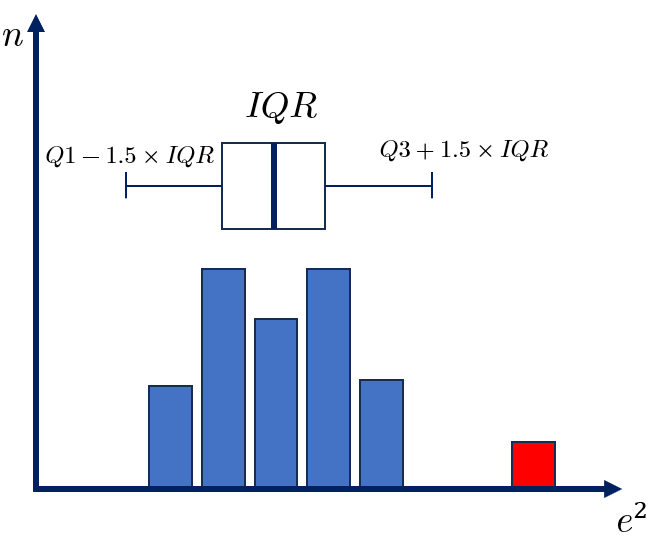
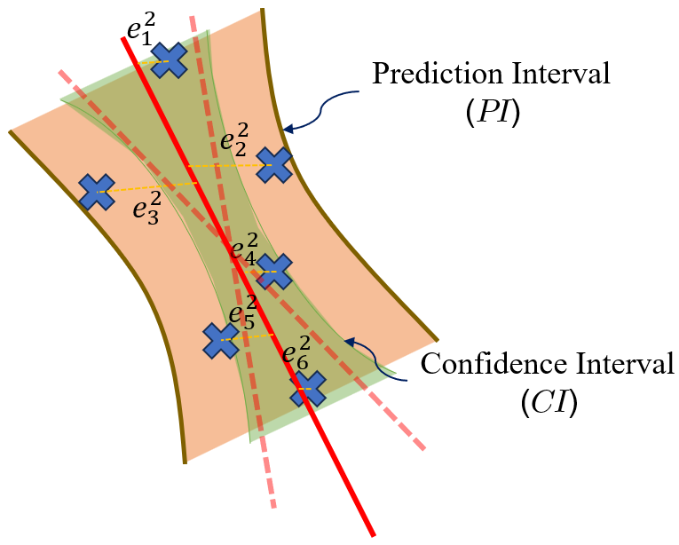

<!DOCTYPE html>
<html class="writer-html5" lang="en" data-content_root="./">
<head>
  <meta charset="utf-8" /><meta name="viewport" content="width=device-width, initial-scale=1" />

  <meta name="viewport" content="width=device-width, initial-scale=1.0" />
  <title>ShockOscillationAnalysis.inc_tracking package &mdash; ShockTrackingLibrary 1.9.0 documentation</title>
      <link rel="stylesheet" type="text/css" href="_static/pygments.css?v=80d5e7a1" />
      <link rel="stylesheet" type="text/css" href="_static/css/theme.css?v=19f00094" />

  
  <!--[if lt IE 9]>
    <script src="_static/js/html5shiv.min.js"></script>
  <![endif]-->
  
        <script src="_static/jquery.js?v=5d32c60e"></script>
        <script src="_static/_sphinx_javascript_frameworks_compat.js?v=2cd50e6c"></script>
        <script src="_static/documentation_options.js?v=c4cb232b"></script>
        <script src="_static/doctools.js?v=888ff710"></script>
        <script src="_static/sphinx_highlight.js?v=dc90522c"></script>
        <script async="async" src="https://cdn.jsdelivr.net/npm/mathjax@3/es5/tex-mml-chtml.js"></script>
    <script src="_static/js/theme.js"></script>
    <link rel="index" title="Index" href="genindex.html" />
    <link rel="search" title="Search" href="search.html" />
    <link rel="next" title="ShockOscillationAnalysis.slice_list_generator package" href="ShockOscillationAnalysis.slice_list_generator.html" />
    <link rel="prev" title="ShockOscillationAnalysis package" href="ShockOscillationAnalysis.html" /> 
</head>

<body class="wy-body-for-nav"> 
  <div class="wy-grid-for-nav">
    <nav data-toggle="wy-nav-shift" class="wy-nav-side">
      <div class="wy-side-scroll">
        <div class="wy-side-nav-search" >

          
          
          <a href="index.html" class="icon icon-home">
            ShockTrackingLibrary
          </a>
<div role="search">
  <form id="rtd-search-form" class="wy-form" action="search.html" method="get">
    <input type="text" name="q" placeholder="Search docs" aria-label="Search docs" />
    <input type="hidden" name="check_keywords" value="yes" />
    <input type="hidden" name="area" value="default" />
  </form>
</div>
        </div><div class="wy-menu wy-menu-vertical" data-spy="affix" role="navigation" aria-label="Navigation menu">
              <p class="caption" role="heading"><span class="caption-text">Contents:</span></p>
<ul class="current">
<li class="toctree-l1"><a class="reference internal" href="Tutorial.html">Tutorials</a></li>
<li class="toctree-l1 current"><a class="reference internal" href="modules.html">ShockOscillationAnalysis</a><ul class="current">
<li class="toctree-l2 current"><a class="reference internal" href="ShockOscillationAnalysis.html">ShockOscillationAnalysis package</a><ul class="current">
<li class="toctree-l3 current"><a class="reference internal" href="ShockOscillationAnalysis.html#subpackages">Subpackages</a><ul class="current">
<li class="toctree-l4 current"><a class="current reference internal" href="#">ShockOscillationAnalysis.inc_tracking package</a></li>
<li class="toctree-l4"><a class="reference internal" href="ShockOscillationAnalysis.slice_list_generator.html">ShockOscillationAnalysis.slice_list_generator package</a></li>
</ul>
</li>
<li class="toctree-l3"><a class="reference internal" href="ShockOscillationAnalysis.html#submodules">Submodules</a></li>
</ul>
</li>
</ul>
</li>
</ul>

        </div>
      </div>
    </nav>

    <section data-toggle="wy-nav-shift" class="wy-nav-content-wrap"><nav class="wy-nav-top" aria-label="Mobile navigation menu" >
          <i data-toggle="wy-nav-top" class="fa fa-bars"></i>
          <a href="index.html">ShockTrackingLibrary</a>
      </nav>

      <div class="wy-nav-content">
        <div class="rst-content">
          <div role="navigation" aria-label="Page navigation">
  <ul class="wy-breadcrumbs">
      <li><a href="index.html" class="icon icon-home" aria-label="Home"></a></li>
          <li class="breadcrumb-item"><a href="modules.html">ShockOscillationAnalysis</a></li>
          <li class="breadcrumb-item"><a href="ShockOscillationAnalysis.html">ShockOscillationAnalysis package</a></li>
      <li class="breadcrumb-item active">ShockOscillationAnalysis.inc_tracking package</li>
      <li class="wy-breadcrumbs-aside">
            <a href="_sources/ShockOscillationAnalysis.inc_tracking.rst.txt" rel="nofollow"> View page source</a>
      </li>
  </ul>
  <hr/>
</div>
          <div role="main" class="document" itemscope="itemscope" itemtype="http://schema.org/Article">
           <div itemprop="articleBody">
             
  <section id="shockoscillationanalysis-inc-tracking-package">
<h1>ShockOscillationAnalysis.inc_tracking package<a class="headerlink" href="#shockoscillationanalysis-inc-tracking-package" title="Link to this heading"></a></h1>
<section id="submodules">
<h2>Submodules<a class="headerlink" href="#submodules" title="Link to this heading"></a></h2>
<section id="module-ShockOscillationAnalysis.inc_tracking.inc_tracking">
<span id="shockoscillationanalysis-inc-tracking-inc-tracking-module"></span><h3>ShockOscillationAnalysis.inc_tracking.inc_tracking module<a class="headerlink" href="#module-ShockOscillationAnalysis.inc_tracking.inc_tracking" title="Link to this heading"></a></h3>
<p>Created on Wed Feb 28 13:47:27 2024</p>
<p>&#64;author: Ahmed H. Hanfy</p>
<dl class="py class">
<dt class="sig sig-object py" id="ShockOscillationAnalysis.inc_tracking.inc_tracking.InclinedShockTracking">
<em class="property"><span class="pre">class</span><span class="w"> </span></em><span class="sig-prename descclassname"><span class="pre">ShockOscillationAnalysis.inc_tracking.inc_tracking.</span></span><span class="sig-name descname"><span class="pre">InclinedShockTracking</span></span><span class="sig-paren">(</span><em class="sig-param"><span class="n"><span class="pre">f</span></span><span class="p"><span class="pre">:</span></span><span class="w"> </span><span class="n"><span class="pre">int</span></span><span class="w"> </span><span class="o"><span class="pre">=</span></span><span class="w"> </span><span class="default_value"><span class="pre">1</span></span></em>, <em class="sig-param"><span class="n"><span class="pre">D</span></span><span class="p"><span class="pre">:</span></span><span class="w"> </span><span class="n"><span class="pre">float</span></span><span class="w"> </span><span class="o"><span class="pre">=</span></span><span class="w"> </span><span class="default_value"><span class="pre">1</span></span></em>, <em class="sig-param"><span class="n"><span class="pre">pixelScale</span></span><span class="p"><span class="pre">:</span></span><span class="w"> </span><span class="n"><span class="pre">float</span></span><span class="w"> </span><span class="o"><span class="pre">=</span></span><span class="w"> </span><span class="default_value"><span class="pre">1</span></span></em><span class="sig-paren">)</span><a class="headerlink" href="#ShockOscillationAnalysis.inc_tracking.inc_tracking.InclinedShockTracking" title="Link to this definition"></a></dt>
<dd><p>Bases: <a class="reference internal" href="ShockOscillationAnalysis.html#ShockOscillationAnalysis.ShockOscillationAnalysis.SOA" title="ShockOscillationAnalysis.ShockOscillationAnalysis.SOA"><code class="xref py py-class docutils literal notranslate"><span class="pre">SOA</span></code></a></p>
<dl class="py method">
<dt class="sig sig-object py" id="ShockOscillationAnalysis.inc_tracking.inc_tracking.InclinedShockTracking.InclinedShockDomainSetup">
<span class="sig-name descname"><span class="pre">InclinedShockDomainSetup</span></span><span class="sig-paren">(</span><em class="sig-param"><span class="n"><span class="pre">CheckingWidth</span></span><span class="p"><span class="pre">:</span></span><span class="w"> </span><span class="n"><span class="pre">int</span></span></em>, <em class="sig-param"><span class="n"><span class="pre">CheckingHieght</span></span><span class="p"><span class="pre">:</span></span><span class="w"> </span><span class="n"><span class="pre">int</span><span class="w"> </span><span class="p"><span class="pre">|</span></span><span class="w"> </span><span class="pre">list</span></span></em>, <em class="sig-param"><span class="n"><span class="pre">inclined_ref_line</span></span><span class="p"><span class="pre">:</span></span><span class="w"> </span><span class="n"><span class="pre">int</span><span class="w"> </span><span class="p"><span class="pre">|</span></span><span class="w"> </span><span class="pre">list</span><span class="p"><span class="pre">[</span></span><span class="pre">int</span><span class="p"><span class="pre">,</span></span><span class="w"> </span><span class="pre">tuple</span><span class="p"><span class="pre">,</span></span><span class="w"> </span><span class="pre">tuple</span><span class="p"><span class="pre">]</span></span></span></em>, <em class="sig-param"><span class="n"><span class="pre">imgShape</span></span><span class="p"><span class="pre">:</span></span><span class="w"> </span><span class="n"><span class="pre">tuple</span></span></em>, <em class="sig-param"><span class="n"><span class="pre">VMidPnt</span></span><span class="p"><span class="pre">:</span></span><span class="w"> </span><span class="n"><span class="pre">int</span></span><span class="w"> </span><span class="o"><span class="pre">=</span></span><span class="w"> </span><span class="default_value"><span class="pre">0</span></span></em>, <em class="sig-param"><span class="n"><span class="pre">nPnts</span></span><span class="p"><span class="pre">:</span></span><span class="w"> </span><span class="n"><span class="pre">int</span></span><span class="w"> </span><span class="o"><span class="pre">=</span></span><span class="w"> </span><span class="default_value"><span class="pre">0</span></span></em>, <em class="sig-param"><span class="n"><span class="pre">preview_img</span></span><span class="p"><span class="pre">:</span></span><span class="w"> </span><span class="n"><span class="pre">ndarray</span></span><span class="w"> </span><span class="o"><span class="pre">=</span></span><span class="w"> </span><span class="default_value"><span class="pre">None</span></span></em><span class="sig-paren">)</span> <span class="sig-return"><span class="sig-return-icon">&#x2192;</span> <span class="sig-return-typehint"><span class="pre">tuple</span><span class="p"><span class="pre">[</span></span><span class="pre">list</span><span class="p"><span class="pre">,</span></span><span class="w"> </span><span class="pre">int</span><span class="p"><span class="pre">,</span></span><span class="w"> </span><span class="pre">int</span><span class="p"><span class="pre">]</span></span></span></span><a class="headerlink" href="#ShockOscillationAnalysis.inc_tracking.inc_tracking.InclinedShockTracking.InclinedShockDomainSetup" title="Link to this definition"></a></dt>
<dd><p>Setup shock inclination test, provids the test slices info. with aid of the estimated 
inclined shock line.</p>
<dl>
<dt>Parameters:</dt><dd><ul class="simple">
<li><p><strong>CheckingWidth (int)</strong>: Width for shock domain checking (sliceWidth).</p></li>
<li><p><strong>CheckingHeight (int or list)</strong>: Height for shock domain checking in px. If a list is provided, it represents a range of heights for generating points [upper limit, lower limit].</p></li>
<li><p><strong>imgShape (tuple)</strong>: Shape of the image (y-length, x-length).</p></li>
<li><p><strong>VMidPnt (int, optional)</strong>: Vertical midpoint. Default is 0.</p></li>
<li><p><strong>nPnts (int, optional)</strong>: Number of points to generate for inclined shock lines. Default is 0.</p></li>
<li><p><strong>preview_img (np.ndarray, optional)</strong>: Image for preview as background. Default is None.</p></li>
</ul>
</dd>
<dt>Returns:</dt><dd><dl class="simple">
<dt>tuple: A tuple containing:</dt><dd><ul class="simple">
<li><p>SlicesInfo (list): List of shock domain slices, [[x-domainStrt,x-domainEnd],y-sliceLoc].</p></li>
<li><p>nPnts (int): Number of slices generated for inclined shock.</p></li>
<li><p>inclinationCheck (bool): Boolean indicating whether the shock inclination test is applicable.</p></li>
</ul>
</dd>
</dl>
</dd>
<dt>Example:</dt><dd><div class="doctest highlight-default notranslate"><div class="highlight"><pre><span></span><span class="gp">&gt;&gt;&gt; </span><span class="kn">from</span> <span class="nn">ShockOscillationAnalysis</span> <span class="kn">import</span> <span class="n">InclinedShockTracking</span> <span class="k">as</span> <span class="n">IncTrac</span>
<span class="gp">&gt;&gt;&gt; </span><span class="n">instance</span> <span class="o">=</span> <span class="n">IncTrac</span><span class="p">(</span><span class="n">f</span><span class="p">)</span>
<span class="gp">&gt;&gt;&gt; </span><span class="n">width</span> <span class="o">=</span> <span class="mi">20</span>
<span class="gp">&gt;&gt;&gt; </span><span class="n">height</span> <span class="o">=</span> <span class="p">[</span><span class="mi">10</span><span class="p">,</span> <span class="mi">20</span><span class="p">]</span>
<span class="gp">&gt;&gt;&gt; </span><span class="n">shape</span> <span class="o">=</span> <span class="p">(</span><span class="mi">100</span><span class="p">,</span> <span class="mi">200</span><span class="p">)</span>
<span class="gp">&gt;&gt;&gt; </span><span class="n">points</span> <span class="o">=</span> <span class="mi">5</span>
<span class="gp">&gt;&gt;&gt; </span><span class="n">slices</span><span class="p">,</span> <span class="n">nPnts</span><span class="p">,</span> <span class="n">success</span> <span class="o">=</span> <span class="n">instance</span><span class="o">.</span><span class="n">InclinedShockDomainSetup</span><span class="p">(</span><span class="n">width</span><span class="p">,</span> <span class="n">height</span><span class="p">,</span> <span class="n">shape</span><span class="p">,</span> <span class="n">nPnts</span><span class="o">=</span><span class="n">points</span><span class="p">)</span>
<span class="gp">&gt;&gt;&gt; </span><span class="nb">print</span><span class="p">(</span><span class="n">slices</span><span class="p">,</span> <span class="n">nPnts</span><span class="p">,</span> <span class="n">success</span><span class="p">)</span>
</pre></div>
</div>
</dd>
</dl>
<div class="admonition note">
<p class="admonition-title">Note</p>
<ul class="simple">
<li><p>The function sets up shock inclination testing by visualizing the shock domain.</p></li>
<li><p>It returns a list of slices location and range, the number of slices, and the inclination applicability.</p></li>
</ul>
</div>
</dd></dl>

<dl class="py method">
<dt class="sig sig-object py" id="ShockOscillationAnalysis.inc_tracking.inc_tracking.InclinedShockTracking.InclinedShockTracking">
<span class="sig-name descname"><span class="pre">InclinedShockTracking</span></span><span class="sig-paren">(</span><em class="sig-param"><span class="n"><span class="pre">img_set</span></span><span class="p"><span class="pre">:</span></span><span class="w"> </span><span class="n"><span class="pre">list</span><span class="p"><span class="pre">[</span></span><span class="pre">ndarray</span><span class="p"><span class="pre">]</span></span></span></em>, <em class="sig-param"><span class="n"><span class="pre">nSlices</span></span><span class="p"><span class="pre">:</span></span><span class="w"> </span><span class="n"><span class="pre">int</span></span></em>, <em class="sig-param"><span class="n"><span class="pre">Ref</span></span><span class="p"><span class="pre">:</span></span><span class="w"> </span><span class="n"><span class="pre">list</span><span class="p"><span class="pre">[</span></span><span class="pre">int</span><span class="p"><span class="pre">]</span></span></span></em>, <em class="sig-param"><span class="n"><span class="pre">slice_thickness</span></span><span class="p"><span class="pre">:</span></span><span class="w"> </span><span class="n"><span class="pre">int</span></span><span class="w"> </span><span class="o"><span class="pre">=</span></span><span class="w"> </span><span class="default_value"><span class="pre">1</span></span></em>, <em class="sig-param"><span class="n"><span class="pre">nReview</span></span><span class="p"><span class="pre">:</span></span><span class="w"> </span><span class="n"><span class="pre">int</span><span class="w"> </span><span class="p"><span class="pre">|</span></span><span class="w"> </span><span class="pre">list</span><span class="p"><span class="pre">[</span></span><span class="pre">int</span><span class="p"><span class="pre">]</span></span></span><span class="w"> </span><span class="o"><span class="pre">=</span></span><span class="w"> </span><span class="default_value"><span class="pre">0</span></span></em>, <em class="sig-param"><span class="n"><span class="pre">output_dirc</span></span><span class="p"><span class="pre">:</span></span><span class="w"> </span><span class="n"><span class="pre">str</span></span><span class="w"> </span><span class="o"><span class="pre">=</span></span><span class="w"> </span><span class="default_value"><span class="pre">''</span></span></em>, <em class="sig-param"><span class="n"><span class="pre">comment</span></span><span class="p"><span class="pre">:</span></span><span class="w"> </span><span class="n"><span class="pre">str</span></span><span class="w"> </span><span class="o"><span class="pre">=</span></span><span class="w"> </span><span class="default_value"><span class="pre">''</span></span></em>, <em class="sig-param"><span class="o"><span class="pre">**</span></span><span class="n"><span class="pre">kwargs</span></span></em><span class="sig-paren">)</span> <span class="sig-return"><span class="sig-return-icon">&#x2192;</span> <span class="sig-return-typehint"><span class="pre">tuple</span></span></span><a class="headerlink" href="#ShockOscillationAnalysis.inc_tracking.inc_tracking.InclinedShockTracking.InclinedShockTracking" title="Link to this definition"></a></dt>
<dd><p>Track and analyze the shock angle in a sequence of images.
This function analyzes a series of images to track and calculate the shock angle
by fitting a line to the shock locations and computing the corresponding shock angle. 
The analysis utilizes the <a class="reference internal" href="#ShockOscillationAnalysis.inc_tracking.inc_tracking_support.ransac" title="ShockOscillationAnalysis.inc_tracking.inc_tracking_support.ransac"><code class="xref py py-func docutils literal notranslate"><span class="pre">RANSAC</span> <span class="pre">(Random</span> <span class="pre">Sample</span> <span class="pre">Consensus)</span></code></a>
or <a class="reference internal" href="#ShockOscillationAnalysis.inc_tracking.inc_tracking_support.v_least_squares" title="ShockOscillationAnalysis.inc_tracking.inc_tracking_support.v_least_squares"><code class="xref py py-func docutils literal notranslate"><span class="pre">least</span> <span class="pre">squares</span></code></a>
methods to fit the shock locations and calculate the angle. The function optionally 
visualizes the tracking results and saves the figures.</p>
<dl>
<dt>Parameters:</dt><dd><ul class="simple">
<li><p><strong>img_set (list):</strong> List of images for shock tracking, the images should be formated as numpy array.</p></li>
<li><p><strong>nSlices (int):</strong> Number of slices to divide the image into for analysis.</p></li>
<li><p><strong>Ref (list):</strong> Reference points for slices [[x_1, x_2, y], …].</p></li>
<li><p><strong>slice_thickness (int, optional):</strong> Thickness of each slice. Default is 1.</p></li>
<li><p><strong>nReview (int or list, optional):</strong> Number or range of images to review. Default is 0.</p></li>
<li><p><strong>output_dirc (str, optional):</strong> Directory to save the review images. Default is ‘’.</p></li>
<li><p><strong>comment (str):</strong> Comment to include in the output filename. Default is an empty string.</p></li>
<li><p><cite>**kwargs</cite>: Additional keyword.</p></li>
</ul>
</dd>
<dt>Additional keyword arguments <cite>**kwargs</cite> may include:</dt><dd><dl class="simple">
<dt>Output background image options:</dt><dd><ul class="simple">
<li><p><strong>op_bg_path (str):</strong> Output background image file path pattern. Supports wildcards.</p></li>
<li><p><strong>bg_x_crop (tuple[int]):</strong> A tuple (y_start, y_end) defining the vertical cropping range. 
Defaults to the full height of the image.</p></li>
<li><p><strong>bg_x_crop (tuple[int]):</strong> A tuple (x_start, x_end) defining the horizontal cropping range. 
Defaults to the full width of the image.</p></li>
<li><p><strong>bg_resize (tuple[int]):</strong> A tuple (width, height) defining the new dimensions for resizing. 
Defaults to the dimensions after cropping.</p></li>
<li><p><strong>bg_90rotate (bool):</strong> Whether to rotate the image 90 degrees clockwise. Defaults to 0 (no rotation).</p></li>
</ul>
</dd>
<dt>Review and results options:</dt><dd><ul class="simple">
<li><p><strong>avg_preview_mode (str):</strong> Mode for previewing average angle. ‘avg_all’, ‘avg_ang’ and None (default is None).</p></li>
<li><p><strong>review_inc_slice_tracking (list or int)</strong>: Specific slices to track and review.</p></li>
<li><p><strong>store_n_files (int|list[int]):</strong> Specify the first n output results to be stored, 
or provide a range of output image indices to be stored in the format [start, end].</p></li>
</ul>
</dd>
<dt>Confidance:</dt><dd><ul class="simple">
<li><p><strong>conf_interval (float, optional):</strong> Confidence level required for error estimation Ex. 0.95 etc.
Default is 0, to not compute the confidance parameters</p></li>
<li><p><strong>residual_preview (bool):</strong> If <cite>True</cite>, generates a residuals preview plot for visualization. Default is <cite>False</cite>.</p></li>
<li><p><strong>osc_boundary (bool):</strong> To display the maximum oscilliation domain depending on the analyised image set.</p></li>
</ul>
</dd>
<dt>Results display options:</dt><dd><ul class="simple">
<li><p><strong>op_90rotate</strong>: To rotate the output axes by 90 degrees clockwise</p></li>
<li><p><strong>points_opacity (float)</strong>: The transperancy of the tracking points from 0 to 1 (default is 1).</p></li>
<li><p><strong>points_color (str)</strong>: The color of the tracking points (default is ‘yellow’)</p></li>
<li><p><strong>uncertain_point_color (str)</strong>: The color of the uncertain tracked points (default is ‘red’)</p></li>
<li><p><strong>avg_lin_color (str)</strong>: The average line color when the <cite>avg_preview_mode</cite> is not None (default is ‘white’)</p></li>
<li><p><strong>avg_lin_opacity (float)</strong>: The transperancy of the average line from 0 to 1 (default is 1)</p></li>
<li><p><strong>avg_show_txt (bool)</strong>: To display the angle value or not when the <cite>avg_preview_mode</cite> is not None (default is True)</p></li>
<li><p><strong>avg_txt_Yloc (int)</strong>: y-location of the angle value text in pixels (default is image height minus 100.)</p></li>
<li><p><strong>avg_txt_size (float)</strong>: Font size of the Angle value (default is 26pt)</p></li>
<li><p><strong>M1_color (str)</strong>: The calculated values of Mach  when the <cite>avg_preview_mode</cite> is not None (default is ‘orange’)</p></li>
<li><p><strong>M1_txt_size (float)</strong>: Font size of the Mach number and inflow Angle values (default is 26pt)</p></li>
<li><p><strong>arc_dia (float)</strong>: inflow angle arc diameter (default is 80px)</p></li>
<li><p><strong>arw_len (float)</strong>: inflow arrow length (default is 50px)</p></li>
<li><p><strong>b_color (str)</strong>: boundary domain and lines color for the active <code class="docutils literal notranslate"><span class="pre">osc_boundary</span></code> (default is ‘tab:orange’)</p></li>
<li><p><strong>osc_range_opacity (float)</strong>: The transperancy of the boundary domain from 0 to 1 (default is 0.3)</p></li>
<li><p><strong>b_lins_opacity (float)</strong>: The transperancy of the boundary lines from 0 to 1 (default is 1)</p></li>
</ul>
</dd>
</dl>
</dd>
<dt>Returns:</dt><dd><dl class="simple">
<dt>tuple: A tuple containing two elements:</dt><dd><ul class="simple">
<li><p><strong>avg_angle_data (np.ndarray)</strong>: Contains average shock angle, confidence, and standard deviation.</p></li>
<li><p><strong>avg_midloc_data (np.ndarray)</strong>: Contains average mid-location of the shock with confidence and standard deviation.</p></li>
</ul>
</dd>
</dl>
</dd>
<dt>Example:</dt><dd><div class="doctest highlight-default notranslate"><div class="highlight"><pre><span></span><span class="gp">&gt;&gt;&gt; </span><span class="kn">from</span> <span class="nn">ShockOscillationAnalysis</span> <span class="kn">import</span> <span class="n">InclinedShockTracking</span> <span class="k">as</span> <span class="n">IncTrac</span>
<span class="gp">&gt;&gt;&gt; </span><span class="n">instance</span> <span class="o">=</span> <span class="n">IncTrac</span><span class="p">(</span><span class="n">f</span><span class="p">)</span>
<span class="gp">&gt;&gt;&gt; </span><span class="n">img_set</span> <span class="o">=</span> <span class="p">[</span><span class="n">img1</span><span class="p">,</span> <span class="n">img2</span><span class="p">,</span> <span class="n">img3</span><span class="p">]</span>
<span class="gp">&gt;&gt;&gt; </span><span class="n">ref</span> <span class="o">=</span> <span class="p">[[</span><span class="mi">10</span><span class="p">,</span> <span class="mi">20</span><span class="p">],</span> <span class="p">[</span><span class="mi">30</span><span class="p">,</span> <span class="mi">40</span><span class="p">],</span> <span class="p">[</span><span class="mi">50</span><span class="p">,</span> <span class="mi">60</span><span class="p">]]</span>
<span class="gp">&gt;&gt;&gt; </span><span class="n">avg_angle</span><span class="p">,</span> <span class="n">avg_mid_loc</span> <span class="o">=</span> <span class="n">instance</span><span class="o">.</span><span class="n">InclinedShockTracking</span><span class="p">(</span><span class="n">img_set</span><span class="p">,</span> <span class="mi">2</span><span class="p">,</span> <span class="n">ref</span><span class="p">,</span> <span class="n">nReview</span><span class="o">=</span><span class="mi">5</span><span class="p">)</span>
<span class="gp">&gt;&gt;&gt; </span><span class="nb">print</span><span class="p">(</span><span class="n">avg_angle</span><span class="p">,</span> <span class="n">avg_mid_loc</span><span class="p">)</span>
</pre></div>
</div>
</dd>
</dl>
<div class="admonition note">
<p class="admonition-title">Note</p>
<ul class="simple">
<li><p>The function performs shock tracking across a series of images and calculates the average shock angle.</p></li>
<li><p>The function optionally computes the confidence interval and standard deviation for shock location and angle.</p></li>
<li><p>If <cite>nReview</cite> is specified as a number, the first <cite>nReview</cite> images will be reviewed.</p></li>
<li><p>If <cite>nReview</cite> is specified as a list, it defines a range of images to review (start, end, step).</p></li>
<li><p>It uses RANSAC or least squares method to fit the shock locations and calculates the corresponding angle.</p></li>
</ul>
</div>
<dl>
<dt>Equations:</dt><dd><p>The shock angle is calculated using the slope <span class="math notranslate nohighlight">\(m\)</span> obtained from the RANSAC or least squares fit:</p>
<div class="math notranslate nohighlight">
\[\theta = \arctan(m)\]</div>
<p>where <span class="math notranslate nohighlight">\(m\)</span> is the slope of the shock location vs. the slice’s vertical position.</p>
<p>The confidence interval for the shock angle is calculated as:</p>
<div class="math notranslate nohighlight">
\[CI_{\theta} = t_{\alpha/2} \cdot \frac{\sigma_{\theta}}{\sqrt{dof}}\]</div>
<dl class="simple">
<dt>where:</dt><dd><ul class="simple">
<li><p><span class="math notranslate nohighlight">\(t_{\alpha/2}\)</span> is the t-distribution value for a given confidence level.</p></li>
<li><p><span class="math notranslate nohighlight">\(\sigma_{\theta}\)</span> is the standard deviation of the angle.</p></li>
<li><p><span class="math notranslate nohighlight">\(dof\)</span> is the degrees of freedom, in case of line analysis <span class="math notranslate nohighlight">\(dof = n_s - 2\)</span> where <span class="math notranslate nohighlight">\(n_s\)</span> number of images. 
But for statistical analysis <span class="math notranslate nohighlight">\(dof = n_s - 1\)</span></p></li>
</ul>
</dd>
</dl>
</dd>
</dl>
</dd></dl>

<dl class="py method">
<dt class="sig sig-object py" id="ShockOscillationAnalysis.inc_tracking.inc_tracking.InclinedShockTracking.ShockPointsTracking">
<span class="sig-name descname"><span class="pre">ShockPointsTracking</span></span><span class="sig-paren">(</span><em class="sig-param"><span class="n"><span class="pre">path</span></span><span class="p"><span class="pre">:</span></span><span class="w"> </span><span class="n"><span class="pre">str</span></span></em>, <em class="sig-param"><span class="n"><span class="pre">tracking_V_range</span></span><span class="p"><span class="pre">:</span></span><span class="w"> </span><span class="n"><span class="pre">list</span><span class="p"><span class="pre">[</span></span><span class="pre">int</span><span class="w"> </span><span class="p"><span class="pre">|</span></span><span class="w"> </span><span class="pre">float</span><span class="p"><span class="pre">]</span></span></span><span class="w"> </span><span class="o"><span class="pre">=</span></span><span class="w"> </span><span class="default_value"><span class="pre">[0,</span> <span class="pre">0]</span></span></em>, <em class="sig-param"><span class="n"><span class="pre">inclination_info</span></span><span class="p"><span class="pre">:</span></span><span class="w"> </span><span class="n"><span class="pre">int</span><span class="w"> </span><span class="p"><span class="pre">|</span></span><span class="w"> </span><span class="pre">list</span><span class="p"><span class="pre">[</span></span><span class="pre">int</span><span class="p"><span class="pre">,</span></span><span class="w"> </span><span class="pre">tuple</span><span class="p"><span class="pre">,</span></span><span class="w"> </span><span class="pre">tuple</span><span class="p"><span class="pre">]</span></span></span><span class="w"> </span><span class="o"><span class="pre">=</span></span><span class="w"> </span><span class="default_value"><span class="pre">0</span></span></em>, <em class="sig-param"><span class="n"><span class="pre">nPnts</span></span><span class="p"><span class="pre">:</span></span><span class="w"> </span><span class="n"><span class="pre">int</span></span><span class="w"> </span><span class="o"><span class="pre">=</span></span><span class="w"> </span><span class="default_value"><span class="pre">0</span></span></em>, <em class="sig-param"><span class="n"><span class="pre">scale_pixels</span></span><span class="o"><span class="pre">=</span></span><span class="default_value"><span class="pre">True</span></span></em>, <em class="sig-param"><span class="n"><span class="pre">preview</span></span><span class="o"><span class="pre">=</span></span><span class="default_value"><span class="pre">True</span></span></em>, <em class="sig-param"><span class="n"><span class="pre">output_directory</span></span><span class="o"><span class="pre">=</span></span><span class="default_value"><span class="pre">''</span></span></em>, <em class="sig-param"><span class="n"><span class="pre">comment</span></span><span class="o"><span class="pre">=</span></span><span class="default_value"><span class="pre">''</span></span></em>, <em class="sig-param"><span class="o"><span class="pre">**</span></span><span class="n"><span class="pre">kwargs</span></span></em><span class="sig-paren">)</span><a class="headerlink" href="#ShockOscillationAnalysis.inc_tracking.inc_tracking.InclinedShockTracking.ShockPointsTracking" title="Link to this definition"></a></dt>
<dd><p>This function identifies shock points by slicing a predefined domain of the shock and 
tracking it at each slice based on the integral method of shock tracking outlined in this 
<a class="reference external" href="https://dx.doi.org/10.2139/ssrn.4797840">article</a>.
It operates over a specified vertical range within the images, serving as the core function
for inclination shock tracking. Additionally, all keyword arguments for output
customization can be passed through this function.</p>
<dl class="simple">
<dt>Parameters:</dt><dd><ul class="simple">
<li><p><strong>path (str)</strong>: Path to the directory containing the image files.</p></li>
<li><p><strong>tracking_V_range (list[int | float], optional)</strong>: Vertical range for tracking shock points, specified as a list with two elements representing the upper and lower bounds (default is [0, 0]).</p></li>
<li><p><strong>inclination_info (int | list[int, tuple, tuple], optional)</strong>: Information about the inclination of the shock domain. It can be an integer representing the width of the domain or a list containing the width along with the start and end points of the line defining the inclination (default is 0).</p></li>
<li><p><strong>nPnts (int, optional)</strong>: Number of points to be tracked (default is 0).</p></li>
<li><p><strong>scale_pixels (bool, optional)</strong>: Whether to scale the pixels in the images (default is True).</p></li>
<li><p><strong>preview (bool, optional)</strong>: Whether to preview the images (default is True).</p></li>
<li><p><strong>output_directory (str, optional)</strong>: Directory to save the output images (default is ‘’).</p></li>
<li><p><strong>comment (str, optional)</strong>: Additional comment for the output (default is ‘’).</p></li>
<li><p><cite>**kwargs</cite>: Additional keyword</p></li>
</ul>
</dd>
<dt>Additional keyword arguments <cite>**kwargs</cite> may include:</dt><dd><dl class="simple">
<dt>Importing image options:</dt><dd><ul class="simple">
<li><p><strong>n_files (int, optional)</strong>: To import the first n-files from the given path.</p></li>
<li><p><strong>every_n_files (int, optional)</strong>: To import files with a step (default is 1).</p></li>
<li><p><strong>within_range (list[int], optional)</strong>: To import files within range [start, end]</p></li>
<li><p><strong>resize_img (tuple[int], optional)</strong>: Tuple specifying the dimensions to resize the images to (width, height). Default is the original image shape.</p></li>
</ul>
</dd>
<dt>Inflow data options:</dt><dd><ul class="simple">
<li><p><strong>flow_dir (list, optional)</strong>: List of tuples containing the measured y-coordinates and the corresponding angles [(y_loc, angle),…].</p></li>
<li><p><strong>flow_Vxy (list, optional)</strong>: List of tuples containing the measured y-coordinates and the corresponding velocity components [(y_loc, Vx, Vy),…].</p></li>
<li><p><strong>angle_interp_kind (str)</strong>: ‘linear’,’CubicSpline’ or ‘PCHIP’ (default is linear)</p></li>
</ul>
</dd>
<dt>Define the domain options and tracking:</dt><dd><ul class="simple">
<li><p><strong>Ref_x0 (list[int], optional):</strong> list of x-coordinates for 2-vertical reference lines [Ref_x01, Ref_x02] used for scaling, used instead of drawing.</p></li>
<li><p><strong>Ref_y0 (int, optional)</strong>: y-coordinate of the horizontal reference line [y = 0] used as reference for tracking_V_range, used instead of drawing.</p></li>
<li><p><strong>slice_thickness (int, optional)</strong>: Thickness of each slice. Default is 1.</p></li>
</ul>
</dd>
<dt>Review and results options:</dt><dd><ul class="simple">
<li><p><strong>preview (bool)</strong>: Whether to preview the selected domain for the analysis or not (default is True)</p></li>
<li><p><strong>review_inc_slice_tracking (int|list[int])</strong>: To plot all slices of spacific image or range of images (default is 0)</p></li>
<li><p><strong>preview_angle_interpolation (bool)</strong>: If True, plot the angle interpolation for preview. (default is False).</p></li>
<li><p><strong>avg_preview_mode (str)</strong>: ‘avg_all’, ‘avg_ang’ and None (default is None).</p></li>
<li><p><strong>Mach_ang_mode (str)</strong>: Flag indicating whether to display the Mach number ‘Mach_num’ if inflow data is available or ‘flow_dir’ when the Mach number is available(defaults to None).</p></li>
<li><p><strong>osc_boundary (bool)</strong>: To display the oscilliation domain depending on the analyised image set.</p></li>
<li><p><strong>output_directory (str)</strong>: The pathe where the output results will be stored (default is ‘’).</p></li>
<li><p><strong>store_n_files (int|list[int])</strong>: Specify the first n output results to be stored, or provide a range of output image indices to be stored in the format [start, end].</p></li>
</ul>
</dd>
<dt>Results display options:</dt><dd><ul class="simple">
<li><p><strong>points_opacity (float)</strong>: The transperancy of the tracking points from 0 to 1 (default is 1).</p></li>
<li><p><strong>points_color (str)</strong>: The color of the tracking points (default is ‘yellow’)</p></li>
<li><p><strong>uncertain_point_color (str)</strong>: The color of the uncertain tracked points (default is ‘red’)</p></li>
<li><p><strong>avg_lin_color (str)</strong>: The average line color when the <cite>avg_preview_mode</cite> is not None (default is ‘white’)</p></li>
<li><p><strong>avg_lin_opacity (float)</strong>: The transperancy of the average line from 0 to 1 (default is 1)</p></li>
<li><p><strong>avg_show_txt (bool)</strong>: To display the angle value or not when the <cite>avg_preview_mode</cite> is not None (default is True)</p></li>
<li><p><strong>avg_txt_Yloc (int)</strong>: y-location of the angle value text in pixels (default is image height minus 100.)</p></li>
<li><p><strong>avg_txt_size (float)</strong>: Font size of the Angle value (default is 26pt)</p></li>
<li><p><strong>M1_color (str)</strong>: The calculated values of Mach  when the <cite>avg_preview_mode</cite> is not None (default is ‘orange’)</p></li>
<li><p><strong>M1_txt_size (float)</strong>: Font size of the Mach number and inflow Angle values (default is 26pt)</p></li>
<li><p><strong>arc_dia (float)</strong>: inflow angle arc diameter (default is 80px)</p></li>
<li><p><strong>arw_len (float)</strong>: inflow arrow length (default is 50px)</p></li>
<li><p><strong>b_color (str)</strong>: boundary domain and lines color for the active <code class="docutils literal notranslate"><span class="pre">osc_boundary</span></code> (default is ‘tab:orange’)</p></li>
<li><p><strong>osc_range_opacity (float)</strong>: The transperancy of the boundary domain from 0 to 1 (default is 0.3)</p></li>
<li><p><strong>b_lins_opacity (float)</strong>: The transperancy of the boundary lines from 0 to 1 (default is 1)</p></li>
</ul>
</dd>
</dl>
</dd>
</dl>
<div class="admonition note">
<p class="admonition-title">Note</p>
<ul class="simple">
<li><p>In case of <code class="docutils literal notranslate"><span class="pre">scale_pixels</span> <span class="pre">=</span> <span class="pre">True</span></code> the <code class="docutils literal notranslate"><span class="pre">Ref_x0</span></code> and <code class="docutils literal notranslate"><span class="pre">Ref_y0</span></code> must be defined either by drawing or as arguments.</p></li>
<li><p>The values of <code class="docutils literal notranslate"><span class="pre">Ref_x0</span></code> and <code class="docutils literal notranslate"><span class="pre">Ref_y0</span></code> are in pixels.</p></li>
<li><p><code class="docutils literal notranslate"><span class="pre">tracking_V_range</span></code> values are in pixels, but if <code class="docutils literal notranslate"><span class="pre">scale_pixels</span> <span class="pre">=</span> <span class="pre">True</span></code>, the values should match the scale units [for example mm].</p></li>
<li><p>The imported files are defined by thier index and sorted by name.</p></li>
<li><p>For automation it is better to set <code class="docutils literal notranslate"><span class="pre">preview</span></code> to False.</p></li>
<li><p>The plots from <code class="docutils literal notranslate"><span class="pre">review_inc_slice_tracking</span></code> give details of finding the shock location, such as local minima, shock location, last image shock location, etc.</p></li>
<li><dl class="simple">
<dt><code class="docutils literal notranslate"><span class="pre">avg_preview_mode</span></code> the display of vertical least squares regression line of the tracked points:</dt><dd><ul>
<li><p>‘avg_all’: Displays the average of all lines calculated from the tracked points across the entire image dataset.</p></li>
<li><p>‘avg_ang’: Displays the line of the tracked points in each image</p></li>
</ul>
</dd>
</dl>
</li>
<li><p>In this version <code class="docutils literal notranslate"><span class="pre">Mach_ang_mode</span></code> can only calculate Mach number when inflow data is available, ‘flow_dir’ is not yet supported!</p></li>
<li><p><code class="docutils literal notranslate"><span class="pre">osc_boundary</span></code> Calculated based on the minimum and maximum recorded location at each slice, a vertical least squares regression line is used to define the oscillation boundary and minimize any uncertainty that might occur.</p></li>
</ul>
</div>
<dl>
<dt>Returns:</dt><dd><p>tuple[float, float]: Average inclination angle and average shock location.</p>
</dd>
<dt>Example:</dt><dd><div class="doctest highlight-default notranslate"><div class="highlight"><pre><span></span><span class="gp">&gt;&gt;&gt; </span><span class="kn">from</span> <span class="nn">ShockOscillationAnalysis</span> <span class="kn">import</span> <span class="n">InclinedShockTracking</span> <span class="k">as</span> <span class="n">IncTrac</span>
<span class="gp">&gt;&gt;&gt; </span><span class="n">D</span> <span class="o">=</span> <span class="mi">60</span>
<span class="gp">&gt;&gt;&gt; </span><span class="n">imgPath</span> <span class="o">=</span> <span class="sa">r</span><span class="s1">&#39;C:\Usersdmin\Pictures\*.png&#39;</span>
<span class="gp">&gt;&gt;&gt; </span><span class="n">IncTrac</span> <span class="o">=</span> <span class="n">IncTrac</span><span class="p">(</span><span class="n">D</span> <span class="o">=</span> <span class="n">D</span><span class="p">)</span>
<span class="gp">&gt;&gt;&gt; </span><span class="n">IncTrac</span><span class="o">.</span><span class="n">ShockPointsTracking</span><span class="p">(</span><span class="n">imgPath</span><span class="p">,</span> <span class="n">scale_pixels</span> <span class="o">=</span> <span class="kc">True</span><span class="p">,</span>
<span class="go">                                tracking_V_range = [5, 25],</span>
<span class="go">                                nPnts = 9, inclination_info = [100, (249, 0), (0, 429)], slice_thickness = 4,</span>
<span class="go">                                points_opacity = 0.0,</span>
<span class="go">                                avg_preview_mode = &#39;avg_all&#39;, avg_show_txt = True, avg_txt_Yloc = 400, avg_txt_size = 30,</span>
<span class="go">                                preview = True,</span>
<span class="go">                                osc_boundary = True)</span>
</pre></div>
</div>
</dd>
<dt>Steps:</dt><dd><ol class="arabic simple">
<li><p>Define reference vertical boundaries (for scaling). Draw or assine them in this parameter <code class="docutils literal notranslate"><span class="pre">Ref_x0</span></code>,</p></li>
<li><p>Define reference horizontal line as the y-datum. Draw or assine it in this parameter <code class="docutils literal notranslate"><span class="pre">Ref_y0</span></code>,</p></li>
<li><p>Define the estimated line of shock. Draw or assine it as two points in this parameter <cite>inclination_info</cite> as in the example</p></li>
<li><p>Run shock tracking function within the selected vertical range <code class="docutils literal notranslate"><span class="pre">tracking_V_range</span></code>.</p></li>
<li><p>The function will perform the tracking after dividing the vertical range into <code class="docutils literal notranslate"><span class="pre">nPnts</span></code>.</p></li>
</ol>
</dd>
</dl>
</dd></dl>

</dd></dl>

</section>
<section id="module-ShockOscillationAnalysis.inc_tracking.inc_tracking_support">
<span id="shockoscillationanalysis-inc-tracking-inc-tracking-support-module"></span><h3>ShockOscillationAnalysis.inc_tracking.inc_tracking_support module<a class="headerlink" href="#module-ShockOscillationAnalysis.inc_tracking.inc_tracking_support" title="Link to this heading"></a></h3>
<p>Created on Wed Jun  5 10:15:04 2024</p>
<p>&#64;author: Ahmed H. Hanfy</p>
<dl class="py function">
<dt class="sig sig-object py" id="ShockOscillationAnalysis.inc_tracking.inc_tracking_support.ImportingFiles">
<span class="sig-prename descclassname"><span class="pre">ShockOscillationAnalysis.inc_tracking.inc_tracking_support.</span></span><span class="sig-name descname"><span class="pre">ImportingFiles</span></span><span class="sig-paren">(</span><em class="sig-param"><span class="n"><span class="pre">pathlist</span></span><span class="p"><span class="pre">:</span></span><span class="w"> </span><span class="n"><span class="pre">list</span><span class="p"><span class="pre">[</span></span><span class="pre">str</span><span class="p"><span class="pre">]</span></span></span></em>, <em class="sig-param"><span class="n"><span class="pre">indices_list</span></span><span class="p"><span class="pre">:</span></span><span class="w"> </span><span class="n"><span class="pre">list</span><span class="p"><span class="pre">[</span></span><span class="pre">int</span><span class="p"><span class="pre">]</span></span></span></em>, <em class="sig-param"><span class="n"><span class="pre">n_images</span></span><span class="p"><span class="pre">:</span></span><span class="w"> </span><span class="n"><span class="pre">int</span></span></em>, <em class="sig-param"><span class="n"><span class="pre">imgs_shp</span></span><span class="p"><span class="pre">:</span></span><span class="w"> </span><span class="n"><span class="pre">tuple</span><span class="p"><span class="pre">[</span></span><span class="pre">int</span><span class="p"><span class="pre">]</span></span></span></em>, <em class="sig-param"><span class="n"><span class="pre">import_type</span></span><span class="o"><span class="pre">=</span></span><span class="default_value"><span class="pre">'gray_scale'</span></span></em>, <em class="sig-param"><span class="o"><span class="pre">**</span></span><span class="n"><span class="pre">kwargs</span></span></em><span class="sig-paren">)</span> <span class="sig-return"><span class="sig-return-icon">&#x2192;</span> <span class="sig-return-typehint"><span class="pre">dict</span><span class="p"><span class="pre">[</span></span><span class="pre">int</span><span class="p"><span class="pre">,</span></span><span class="w"> </span><span class="pre">ndarray</span><span class="p"><span class="pre">]</span></span></span></span><a class="headerlink" href="#ShockOscillationAnalysis.inc_tracking.inc_tracking_support.ImportingFiles" title="Link to this definition"></a></dt>
<dd><p>Import images from specified paths, optionally crop, resize or rotate them.</p>
<dl>
<dt>Parameters:</dt><dd><ul class="simple">
<li><p><strong>pathlist (list[str])</strong>: List of paths to the image files to be imported.</p></li>
<li><p><strong>indices_list (list[int])</strong>: List of indices indicating which images from <cite>pathlist</cite> should be imported.</p></li>
<li><p><strong>n_images (int)</strong>: Number of images to import.</p></li>
<li><p><strong>imgs_shp (tuple[int])</strong>: Desired shape of the images (height, width).</p></li>
<li><p><strong>import_type (str, optional)</strong>: Type of image import. Can be ‘gray_scale’ for grayscale images or ‘other’ for other types. Default is ‘other’.</p></li>
<li><dl class="simple">
<dt><strong>kwargs (dict, optional)</strong>: Additional parameters:</dt><dd><ul>
<li><p><strong>resize_img (tuple[int], optional)</strong>: Tuple specifying the desired dimensions for resizing the images (width, height). Default is the original shape of the images.</p></li>
<li><p><strong>crop_y_img (tuple[int], optional)</strong>: Tuple specifying the cropping range along the y-axis (min, max). Default is to crop the entire image along y.</p></li>
<li><p><strong>crop_x_img (tuple[int], optional)</strong>: Tuple specifying the cropping range along the x-axis (min, max). Default is to crop the entire image along x.</p></li>
<li><p><strong>rotate90_img (int, optional)</strong>: If set to 1, rotates the images 90 degrees clockwise. Default is 0 (no rotation).</p></li>
</ul>
</dd>
</dl>
</li>
</ul>
</dd>
<dt>Returns:</dt><dd><ul class="simple">
<li><dl class="simple">
<dt>tuple:</dt><dd><ul>
<li><p><strong>img_list (dict[int, np.ndarray])</strong>: Dictionary where the keys are indices from <cite>indices_list</cite> and the values are the corresponding processed images.</p></li>
</ul>
</dd>
</dl>
</li>
</ul>
</dd>
<dt>Example Flow:</dt><dd><ol class="arabic simple">
<li><p>Import images from the list of paths specified in <cite>pathlist</cite> based on the indices in <cite>indices_list</cite>.</p></li>
<li><p>Apply cropping if specified in <cite>kwargs</cite>.</p></li>
<li><p>Resize the images based on <cite>resize_img</cite> parameter if provided.</p></li>
<li><p>Rotate the images 90 degrees if <cite>rotate90_img</cite> is set to <code class="docutils literal notranslate"><span class="pre">1</span></code>.</p></li>
<li><p>Return a dictionary of images, indexed by the values in <cite>indices_list</cite>.</p></li>
</ol>
</dd>
<dt>Example:</dt><dd><div class="doctest highlight-default notranslate"><div class="highlight"><pre><span></span><span class="gp">&gt;&gt;&gt; </span><span class="kn">from</span> <span class="nn">ShockOscillationAnalysis</span> <span class="kn">import</span> <span class="n">InclinedShockTracking</span> <span class="k">as</span> <span class="n">IncTrac</span>
<span class="gp">&gt;&gt;&gt; </span><span class="n">instance</span> <span class="o">=</span> <span class="n">IncTrac</span><span class="p">(</span><span class="n">f</span><span class="p">)</span>
<span class="gp">&gt;&gt;&gt; </span><span class="n">pathlist</span> <span class="o">=</span> <span class="p">[</span><span class="s1">&#39;path/to/image1.jpg&#39;</span><span class="p">,</span> <span class="s1">&#39;path/to/image2.jpg&#39;</span><span class="p">]</span>
<span class="gp">&gt;&gt;&gt; </span><span class="n">indices</span> <span class="o">=</span> <span class="p">[</span><span class="mi">0</span><span class="p">,</span> <span class="mi">1</span><span class="p">]</span>
<span class="gp">&gt;&gt;&gt; </span><span class="n">n_images</span> <span class="o">=</span> <span class="mi">2</span>
<span class="gp">&gt;&gt;&gt; </span><span class="n">shape</span> <span class="o">=</span> <span class="p">(</span><span class="mi">100</span><span class="p">,</span> <span class="mi">200</span><span class="p">)</span>
<span class="gp">&gt;&gt;&gt; </span><span class="n">original_imgs</span><span class="p">,</span> <span class="n">processed_imgs</span> <span class="o">=</span> <span class="n">instance</span><span class="o">.</span><span class="n">ImportingFiles</span><span class="p">(</span><span class="n">pathlist</span><span class="p">,</span> <span class="n">indices</span><span class="p">,</span> <span class="n">n_images</span><span class="p">,</span> <span class="n">shape</span><span class="p">)</span>
<span class="gp">&gt;&gt;&gt; </span><span class="nb">print</span><span class="p">(</span><span class="n">original_imgs</span><span class="p">,</span> <span class="n">processed_imgs</span><span class="p">)</span>
</pre></div>
</div>
</dd>
</dl>
<div class="admonition note">
<p class="admonition-title">Note</p>
<ul class="simple">
<li><dl class="simple">
<dt>The function uses different import functions based on the <cite>import_type</cite> parameter. </dt><dd><ul>
<li><p>If the type is ‘gray_scale’, the <cite>import_gray</cite> function is used to convert the images to grayscale.</p></li>
<li><p>Otherwise, the <cite>other</cite> function is used for other image types.</p></li>
</ul>
</dd>
</dl>
</li>
<li><p>Images are resized to the specified dimensions if <cite>resize_img</cite> is provided in the keyword arguments.</p></li>
<li><p>Cropping is applied to the images based on <cite>crop_x_img</cite> and <cite>crop_y_img</cite> parameters, and the images can optionally be rotated by 90 degrees.</p></li>
<li><p>Progress is displayed on the console while the images are being imported.</p></li>
</ul>
</div>
</dd></dl>

<dl class="py function">
<dt class="sig sig-object py" id="ShockOscillationAnalysis.inc_tracking.inc_tracking_support.anglesInterpolation">
<span class="sig-prename descclassname"><span class="pre">ShockOscillationAnalysis.inc_tracking.inc_tracking_support.</span></span><span class="sig-name descname"><span class="pre">anglesInterpolation</span></span><span class="sig-paren">(</span><em class="sig-param"><span class="n"><span class="pre">pnts_y_list</span></span><span class="p"><span class="pre">:</span></span><span class="w"> </span><span class="n"><span class="pre">list</span><span class="p"><span class="pre">[</span></span><span class="pre">int</span><span class="p"><span class="pre">]</span></span></span></em>, <em class="sig-param"><span class="n"><span class="pre">flow_dir</span></span><span class="p"><span class="pre">:</span></span><span class="w"> </span><span class="n"><span class="pre">list</span><span class="p"><span class="pre">[</span></span><span class="pre">float</span><span class="p"><span class="pre">]</span></span></span><span class="w"> </span><span class="o"><span class="pre">=</span></span><span class="w"> </span><span class="default_value"><span class="pre">None</span></span></em>, <em class="sig-param"><span class="n"><span class="pre">flow_Vxy</span></span><span class="p"><span class="pre">:</span></span><span class="w"> </span><span class="n"><span class="pre">list</span><span class="p"><span class="pre">[</span></span><span class="pre">tuple</span><span class="p"><span class="pre">]</span></span></span><span class="w"> </span><span class="o"><span class="pre">=</span></span><span class="w"> </span><span class="default_value"><span class="pre">None</span></span></em>, <em class="sig-param"><span class="o"><span class="pre">**</span></span><span class="n"><span class="pre">kwargs</span></span></em><span class="sig-paren">)</span> <span class="sig-return"><span class="sig-return-icon">&#x2192;</span> <span class="sig-return-typehint"><span class="pre">list</span><span class="p"><span class="pre">[</span></span><span class="pre">float</span><span class="p"><span class="pre">]</span></span></span></span><a class="headerlink" href="#ShockOscillationAnalysis.inc_tracking.inc_tracking_support.anglesInterpolation" title="Link to this definition"></a></dt>
<dd><p>Interpolate angles based on given y-coordinates and corresponding angles or velocity components.</p>
<dl>
<dt>Parameters:</dt><dd><ul class="simple">
<li><p><strong>pnts_y_list (list)</strong>: List of y-coordinates to interpolate angles for.</p></li>
<li><p><strong>flow_dir (list, optional)</strong>: List of tuples containing the measured y-coordinates and the corresponding angles [(y_loc, angle),…].</p></li>
<li><p><strong>flow_Vxy (list, optional)</strong>: List of tuples containing the measured y-coordinates and the corresponding velocity components [(y_loc, Vx, Vy),…].</p></li>
<li><dl class="simple">
<dt><cite>**kwargs</cite>: Additional keyword arguments:</dt><dd><ul>
<li><p>angle_interp_kind (str):</p></li>
<li><p>preview_angle_interpolation (bool): If True, plot the angle interpolation for preview. Default is False.</p></li>
</ul>
</dd>
</dl>
</li>
</ul>
</dd>
<dt>Returns:</dt><dd><p>list: Interpolated angles for each y-coordinate in <cite>pnts_y_list</cite>. If the y-domain is out of valid range, returns an empty list.</p>
</dd>
<dt>Example:</dt><dd><div class="doctest highlight-default notranslate"><div class="highlight"><pre><span></span><span class="gp">&gt;&gt;&gt; </span><span class="kn">from</span> <span class="nn">ShockOscillationAnalysis</span> <span class="kn">import</span> <span class="n">InclinedShockTracking</span>
<span class="gp">&gt;&gt;&gt; </span><span class="n">instance</span> <span class="o">=</span> <span class="n">InclinedShockTracking</span><span class="p">()</span>
<span class="gp">&gt;&gt;&gt; </span><span class="n">pnts_y</span> <span class="o">=</span> <span class="p">[</span><span class="mi">5</span><span class="p">,</span> <span class="mi">15</span><span class="p">,</span> <span class="mi">25</span><span class="p">]</span>
<span class="gp">&gt;&gt;&gt; </span><span class="n">flow_dir</span> <span class="o">=</span> <span class="p">[(</span><span class="mi">0</span><span class="p">,</span> <span class="mi">10</span><span class="p">),</span> <span class="p">(</span><span class="mi">10</span><span class="p">,</span> <span class="mi">20</span><span class="p">),</span> <span class="p">(</span><span class="mi">20</span><span class="p">,</span> <span class="mi">30</span><span class="p">)]</span>
<span class="gp">&gt;&gt;&gt; </span><span class="n">interpolated_angles</span> <span class="o">=</span> <span class="n">instance</span><span class="o">.</span><span class="n">anglesInterpolation</span><span class="p">(</span><span class="n">pnts_y</span><span class="p">,</span> <span class="n">flow_dir</span><span class="p">)</span>
<span class="gp">&gt;&gt;&gt; </span><span class="nb">print</span><span class="p">(</span><span class="n">interpolated_angles</span><span class="p">)</span>
</pre></div>
</div>
</dd>
</dl>
<div class="admonition note">
<p class="admonition-title">Note</p>
<ul class="simple">
<li><dl class="simple">
<dt>interpolation can be performed using multible methods ‘linear’,’CubicSpline’ and ‘PCHIP’ for better inflow representation</dt><dd><ul>
<li><p>If ‘linear’, linear interpolation will be performed. Default is ‘linear’.</p></li>
<li><p>If ‘CubicSpline’, Interpolate data with a piecewise cubic polynomial which is twice continuously differentiable.</p></li>
<li><p>If ‘PCHIP’, PCHIP 1-D monotonic cubic interpolation will be performed.</p></li>
</ul>
</dd>
</dl>
</li>
<li><p>If a y-coordinate in <cite>pnts_y_list</cite> is out of the range defined by <cite>flow_dir</cite> or <cite>flow_Vxy</cite>, the function will consider only boundary angles.</p></li>
<li><p>If both <cite>flow_dir</cite> and <cite>flow_Vxy</cite> are provided, <cite>flow_dir</cite> will take precedence.</p></li>
</ul>
</div>
<div class="admonition seealso">
<p class="admonition-title">See also</p>
<ul class="simple">
<li><p>For more information about CubicSpline: <a class="reference external" href="https://docs.scipy.org/doc/scipy/reference/generated/scipy.interpolate.CubicSpline.html#scipy.interpolate.CubicSpline">scipy.interpolate.CubicSpline</a>.</p></li>
<li><p>For more information about PCHIP: <a class="reference external" href="https://docs.scipy.org/doc/scipy/reference/generated/scipy.interpolate.PchipInterpolator.html#scipy.interpolate.PchipInterpolator">scipy.interpolate.PchipInterpolator</a>.</p></li>
</ul>
</div>
</dd></dl>

<dl class="py function">
<dt class="sig sig-object py" id="ShockOscillationAnalysis.inc_tracking.inc_tracking_support.doNone">
<span class="sig-prename descclassname"><span class="pre">ShockOscillationAnalysis.inc_tracking.inc_tracking_support.</span></span><span class="sig-name descname"><span class="pre">doNone</span></span><span class="sig-paren">(</span><em class="sig-param"><span class="n"><span class="pre">img</span></span></em><span class="sig-paren">)</span><a class="headerlink" href="#ShockOscillationAnalysis.inc_tracking.inc_tracking_support.doNone" title="Link to this definition"></a></dt>
<dd></dd></dl>

<dl class="py function">
<dt class="sig sig-object py" id="ShockOscillationAnalysis.inc_tracking.inc_tracking_support.import_gray">
<span class="sig-prename descclassname"><span class="pre">ShockOscillationAnalysis.inc_tracking.inc_tracking_support.</span></span><span class="sig-name descname"><span class="pre">import_gray</span></span><span class="sig-paren">(</span><em class="sig-param"><span class="n"><span class="pre">img</span></span></em>, <em class="sig-param"><span class="n"><span class="pre">resize_img</span></span></em><span class="sig-paren">)</span><a class="headerlink" href="#ShockOscillationAnalysis.inc_tracking.inc_tracking_support.import_gray" title="Link to this definition"></a></dt>
<dd></dd></dl>

<dl class="py function">
<dt class="sig sig-object py" id="ShockOscillationAnalysis.inc_tracking.inc_tracking_support.import_other">
<span class="sig-prename descclassname"><span class="pre">ShockOscillationAnalysis.inc_tracking.inc_tracking_support.</span></span><span class="sig-name descname"><span class="pre">import_other</span></span><span class="sig-paren">(</span><em class="sig-param"><span class="n"><span class="pre">img</span></span></em>, <em class="sig-param"><span class="n"><span class="pre">resize_img</span></span></em><span class="sig-paren">)</span><a class="headerlink" href="#ShockOscillationAnalysis.inc_tracking.inc_tracking_support.import_other" title="Link to this definition"></a></dt>
<dd></dd></dl>

<dl class="py function">
<dt class="sig sig-object py" id="ShockOscillationAnalysis.inc_tracking.inc_tracking_support.pearson_corr_coef">
<span class="sig-prename descclassname"><span class="pre">ShockOscillationAnalysis.inc_tracking.inc_tracking_support.</span></span><span class="sig-name descname"><span class="pre">pearson_corr_coef</span></span><span class="sig-paren">(</span><em class="sig-param"><span class="n"><span class="pre">xLoc</span></span><span class="p"><span class="pre">:</span></span><span class="w"> </span><span class="n"><span class="pre">list</span><span class="p"><span class="pre">[</span></span><span class="pre">float</span><span class="p"><span class="pre">]</span></span></span></em>, <em class="sig-param"><span class="n"><span class="pre">columnY</span></span><span class="p"><span class="pre">:</span></span><span class="w"> </span><span class="n"><span class="pre">list</span><span class="p"><span class="pre">[</span></span><span class="pre">float</span><span class="p"><span class="pre">]</span></span></span></em>, <em class="sig-param"><span class="n"><span class="pre">nSlices</span></span><span class="p"><span class="pre">:</span></span><span class="w"> </span><span class="n"><span class="pre">int</span></span></em><span class="sig-paren">)</span> <span class="sig-return"><span class="sig-return-icon">&#x2192;</span> <span class="sig-return-typehint"><span class="pre">list</span><span class="p"><span class="pre">[</span></span><span class="pre">float</span><span class="p"><span class="pre">]</span></span></span></span><a class="headerlink" href="#ShockOscillationAnalysis.inc_tracking.inc_tracking_support.pearson_corr_coef" title="Link to this definition"></a></dt>
<dd><p>Calculate the Pearson correlation coefficient.</p>
<dl>
<dt>Parameters:</dt><dd><ul class="simple">
<li><p><strong>xLoc (list[float])</strong>: List of x-coordinates of the points.</p></li>
<li><p><strong>columnY (list[float])</strong>: List of y-coordinates of the points.</p></li>
<li><p><strong>nSlices (int)</strong>: Number of slices or data points.</p></li>
</ul>
</dd>
<dt>Returns:</dt><dd><p>float: Pearson correlation coefficient.</p>
</dd>
<dt>Example:</dt><dd><div class="doctest highlight-default notranslate"><div class="highlight"><pre><span></span><span class="gp">&gt;&gt;&gt; </span><span class="kn">from</span> <span class="nn">ShockOscillationAnalysis</span> <span class="kn">import</span> <span class="n">InclinedShockTracking</span>
<span class="gp">&gt;&gt;&gt; </span><span class="n">instance</span> <span class="o">=</span> <span class="n">InclinedShockTracking</span><span class="p">()</span>
<span class="gp">&gt;&gt;&gt; </span><span class="n">nSlices</span> <span class="o">=</span> <span class="mi">5</span>
<span class="gp">&gt;&gt;&gt; </span><span class="n">xLoc</span> <span class="o">=</span> <span class="p">[</span><span class="mi">1</span><span class="p">,</span> <span class="mi">2</span><span class="p">,</span> <span class="mi">3</span><span class="p">,</span> <span class="mi">4</span><span class="p">,</span> <span class="mi">5</span><span class="p">]</span>
<span class="gp">&gt;&gt;&gt; </span><span class="n">columnY</span> <span class="o">=</span> <span class="p">[</span><span class="mi">2</span><span class="p">,</span> <span class="mi">4</span><span class="p">,</span> <span class="mi">6</span><span class="p">,</span> <span class="mi">8</span><span class="p">,</span> <span class="mi">10</span><span class="p">]</span>
<span class="gp">&gt;&gt;&gt; </span><span class="n">nSlices</span> <span class="o">=</span> <span class="mi">5</span>
<span class="gp">&gt;&gt;&gt; </span><span class="n">r</span> <span class="o">=</span> <span class="n">instance</span><span class="o">.</span><span class="n">pearson_corr_coef</span><span class="p">(</span><span class="n">xLoc</span><span class="p">,</span> <span class="n">columnY</span><span class="p">,</span> <span class="n">nSlices</span><span class="p">)</span>
<span class="gp">&gt;&gt;&gt; </span><span class="nb">print</span><span class="p">(</span><span class="n">r</span><span class="p">)</span>
</pre></div>
</div>
</dd>
</dl>
<div class="admonition note">
<p class="admonition-title">Note</p>
<ul>
<li><p>The function calculates the Pearson correlation coefficient using the formula:</p>
<div class="math notranslate nohighlight">
\[r = \frac{n \sum (xy) - (\sum x)(\sum y)}{\sqrt{[n \sum x^2 - (\sum x)^2][n \sum y^2 - (\sum y)^2]}}\]</div>
</li>
<li><p>It returns the Pearson correlation coefficient as a float.</p></li>
</ul>
</div>
</dd></dl>

<dl class="py function">
<dt class="sig sig-object py" id="ShockOscillationAnalysis.inc_tracking.inc_tracking_support.ransac">
<span class="sig-prename descclassname"><span class="pre">ShockOscillationAnalysis.inc_tracking.inc_tracking_support.</span></span><span class="sig-name descname"><span class="pre">ransac</span></span><span class="sig-paren">(</span><em class="sig-param"><span class="n"><span class="pre">x</span></span><span class="p"><span class="pre">:</span></span><span class="w"> </span><span class="n"><span class="pre">ndarray</span></span></em>, <em class="sig-param"><span class="n"><span class="pre">y</span></span><span class="p"><span class="pre">:</span></span><span class="w"> </span><span class="n"><span class="pre">ndarray</span></span></em>, <em class="sig-param"><span class="n"><span class="pre">threshold</span></span><span class="p"><span class="pre">:</span></span><span class="w"> </span><span class="n"><span class="pre">float</span></span></em>, <em class="sig-param"><span class="n"><span class="pre">e</span></span><span class="p"><span class="pre">:</span></span><span class="w"> </span><span class="n"><span class="pre">float</span></span><span class="w"> </span><span class="o"><span class="pre">=</span></span><span class="w"> </span><span class="default_value"><span class="pre">0.3</span></span></em>, <em class="sig-param"><span class="n"><span class="pre">p</span></span><span class="p"><span class="pre">:</span></span><span class="w"> </span><span class="n"><span class="pre">float</span></span><span class="w"> </span><span class="o"><span class="pre">=</span></span><span class="w"> </span><span class="default_value"><span class="pre">0.999</span></span></em>, <em class="sig-param"><span class="n"><span class="pre">n_samples</span></span><span class="p"><span class="pre">:</span></span><span class="w"> </span><span class="n"><span class="pre">int</span></span><span class="w"> </span><span class="o"><span class="pre">=</span></span><span class="w"> </span><span class="default_value"><span class="pre">5</span></span></em>, <em class="sig-param"><span class="n"><span class="pre">max_trials</span></span><span class="p"><span class="pre">:</span></span><span class="w"> </span><span class="n"><span class="pre">int</span></span><span class="w"> </span><span class="o"><span class="pre">=</span></span><span class="w"> </span><span class="default_value"><span class="pre">0</span></span></em><span class="sig-paren">)</span> <span class="sig-return"><span class="sig-return-icon">&#x2192;</span> <span class="sig-return-typehint"><span class="pre">tuple</span><span class="p"><span class="pre">[</span></span><span class="pre">float</span><span class="p"><span class="pre">]</span></span></span></span><a class="headerlink" href="#ShockOscillationAnalysis.inc_tracking.inc_tracking_support.ransac" title="Link to this definition"></a></dt>
<dd><p>Perform RANSAC (Random Sample Consensus) algorithm for robust linear model fitting.</p>
<p>This function identifies the best linear model for a dataset with potential outliers 
by iteratively fitting models to random subsets of the data and evaluating their inlier scores.</p>
<dl>
<dt>Parameters:</dt><dd><ul class="simple">
<li><p><strong>x (np.ndarray)</strong>: Array of independent variable values.</p></li>
<li><p><strong>y (np.ndarray)</strong>: Array of dependent variable values.</p></li>
<li><p><strong>threshold (float)</strong>: Threshold for classifying points as inliers based on their residuals.</p></li>
<li><p><strong>e (float, optional)</strong>: Estimated outlier ratio. Defaults to 0.3.
Represents the proportion of outliers in the dataset.</p></li>
<li><p><strong>p (float, optional)</strong>: Desired probability of selecting at least one outlier-free subset. Defaults to 0.999.</p></li>
<li><p><strong>n_samples (int, optional)</strong>: Number of random points to select for model fitting in each iteration. Defaults to 5.</p></li>
<li><p><strong>max_trials (int, optional)</strong>: Maximum number of RANSAC iterations. Defaults to 0, where the number of trials 
is automatically computed based on <cite>e</cite> and <cite>p</cite>.</p></li>
</ul>
</dd>
<dt>Returns:</dt><dd><ul class="simple">
<li><dl class="simple">
<dt>tuple:</dt><dd><ul>
<li><p><strong>best_model (float)</strong>: The slope of the best-fitting linear model.</p></li>
<li><p><strong>best_inlier_mean (float)</strong>: Mean of the x-coordinates of the inliers corresponding to the best model.</p></li>
</ul>
</dd>
</dl>
</li>
</ul>
</dd>
<dt>Raises:</dt><dd><ul class="simple">
<li><p>Exception: If the algorithm fails to find a valid model, the function will print debugging information.</p></li>
</ul>
</dd>
<dt>Equations:</dt><dd><ul>
<li><p>The number of iterations <span class="math notranslate nohighlight">\(n_{tries}\)</span>; however, can be roughly determined as a function of the desired probability of success <span class="math notranslate nohighlight">\(p\)</span> as shown below.</p>
<div class="math notranslate nohighlight">
\[n_{tries} = \frac{\log(1 - p)}{\log(1 - (1 - e)^{n_s})}\]</div>
<p>where: <span class="math notranslate nohighlight">\(e\)</span> is number of inliers in data to number of points in data. 
here assumed to be 30% of the points are inlier and <span class="math notranslate nohighlight">\(n_s\)</span> is the 
sample size among the existed points</p>
</li>
<li><p>The outliers are estimated based on the distance between the existing points and predected line as follow:</p>
<div class="math notranslate nohighlight">
\[e = |x - x_{pred}|\]</div>
<p>where:</p>
<div class="math notranslate nohighlight">
\[ \begin{align}\begin{aligned}x_{pred} =             
    \begin{cases}
        \frac{y - c}{m} \ \forall m != \infty \\\        \overline{x} \ \forall m = \infty
    \end{cases}\end{aligned}\end{align} \]</div>
</li>
</ul>
</dd>
<dt>Example:</dt><dd><div class="doctest highlight-default notranslate"><div class="highlight"><pre><span></span><span class="gp">&gt;&gt;&gt; </span><span class="kn">import</span> <span class="nn">numpy</span> <span class="k">as</span> <span class="nn">np</span>
<span class="gp">&gt;&gt;&gt; </span><span class="n">x</span> <span class="o">=</span> <span class="n">np</span><span class="o">.</span><span class="n">array</span><span class="p">([</span><span class="mi">1</span><span class="p">,</span> <span class="mi">2</span><span class="p">,</span> <span class="mi">3</span><span class="p">,</span> <span class="mi">4</span><span class="p">,</span> <span class="mi">5</span><span class="p">])</span>
<span class="gp">&gt;&gt;&gt; </span><span class="n">y</span> <span class="o">=</span> <span class="n">np</span><span class="o">.</span><span class="n">array</span><span class="p">([</span><span class="mf">2.1</span><span class="p">,</span> <span class="mf">4.2</span><span class="p">,</span> <span class="mf">6.1</span><span class="p">,</span> <span class="mf">8.0</span><span class="p">,</span> <span class="mf">10.2</span><span class="p">])</span>
<span class="gp">&gt;&gt;&gt; </span><span class="n">threshold</span> <span class="o">=</span> <span class="mf">0.5</span>
<span class="gp">&gt;&gt;&gt; </span><span class="n">slope</span><span class="p">,</span> <span class="n">inlier_mean</span> <span class="o">=</span> <span class="n">ransac</span><span class="p">(</span><span class="n">x</span><span class="p">,</span> <span class="n">y</span><span class="p">,</span> <span class="n">threshold</span><span class="p">)</span>
<span class="gp">&gt;&gt;&gt; </span><span class="nb">print</span><span class="p">(</span><span class="s2">&quot;Slope:&quot;</span><span class="p">,</span> <span class="n">slope</span><span class="p">)</span>
<span class="gp">&gt;&gt;&gt; </span><span class="nb">print</span><span class="p">(</span><span class="s2">&quot;Inlier mean:&quot;</span><span class="p">,</span> <span class="n">inlier_mean</span><span class="p">)</span>
</pre></div>
</div>
</dd>
</dl>
<div class="admonition note">
<p class="admonition-title">Note</p>
<ul class="simple">
<li><p>The number of tracking points should be more than the sample size <span class="math notranslate nohighlight">\(n_s\)</span> by 1 at least</p></li>
<li><p>This function relies on the <a class="reference internal" href="#ShockOscillationAnalysis.inc_tracking.inc_tracking_support.v_least_squares" title="ShockOscillationAnalysis.inc_tracking.inc_tracking_support.v_least_squares"><code class="xref py py-func docutils literal notranslate"><span class="pre">v_least_squares</span></code></a> function for linear model fitting.</p></li>
<li><p>Outliers are automatically excluded based on the residual threshold.</p></li>
<li><p>The function is designed to handle datasets with a moderate proportion of outliers.</p></li>
</ul>
</div>
</dd></dl>

<dl class="py function">
<dt class="sig sig-object py" id="ShockOscillationAnalysis.inc_tracking.inc_tracking_support.rotate90">
<span class="sig-prename descclassname"><span class="pre">ShockOscillationAnalysis.inc_tracking.inc_tracking_support.</span></span><span class="sig-name descname"><span class="pre">rotate90</span></span><span class="sig-paren">(</span><em class="sig-param"><span class="n"><span class="pre">img</span></span></em><span class="sig-paren">)</span><a class="headerlink" href="#ShockOscillationAnalysis.inc_tracking.inc_tracking_support.rotate90" title="Link to this definition"></a></dt>
<dd><p>Rotate an image 90 degrees clockwise.</p>
<p>This function transposes the image matrix (swaps rows and columns) and 
flips it horizontally to achieve a 90-degree clockwise rotation.</p>
<dl>
<dt>Parameters:</dt><dd><ul class="simple">
<li><p><strong>img (numpy.ndarray)</strong>: Input image as a NumPy array. The image should be in a standard format 
(e.g., grayscale or RGB) compatible with OpenCV operations.</p></li>
</ul>
</dd>
<dt>Returns:</dt><dd><ul class="simple">
<li><p><strong>numpy.ndarray</strong>: Rotated image with the same format as the input.</p></li>
</ul>
</dd>
<dt>Example:</dt><dd><div class="doctest highlight-default notranslate"><div class="highlight"><pre><span></span><span class="gp">&gt;&gt;&gt; </span><span class="kn">import</span> <span class="nn">cv2</span>
<span class="gp">&gt;&gt;&gt; </span><span class="n">img</span> <span class="o">=</span> <span class="n">cv2</span><span class="o">.</span><span class="n">imread</span><span class="p">(</span><span class="s1">&#39;example.jpg&#39;</span><span class="p">)</span>  <span class="c1"># Load an image</span>
<span class="gp">&gt;&gt;&gt; </span><span class="n">rotated_img</span> <span class="o">=</span> <span class="n">rotate90</span><span class="p">(</span><span class="n">img</span><span class="p">)</span>     <span class="c1"># Rotate it 90 degrees</span>
<span class="gp">&gt;&gt;&gt; </span><span class="n">cv2</span><span class="o">.</span><span class="n">imshow</span><span class="p">(</span><span class="s1">&#39;Rotated Image&#39;</span><span class="p">,</span> <span class="n">rotated_img</span><span class="p">)</span>  <span class="c1"># Display the rotated image</span>
<span class="gp">&gt;&gt;&gt; </span><span class="n">cv2</span><span class="o">.</span><span class="n">waitKey</span><span class="p">(</span><span class="mi">0</span><span class="p">)</span>
<span class="gp">&gt;&gt;&gt; </span><span class="n">cv2</span><span class="o">.</span><span class="n">destroyAllWindows</span><span class="p">()</span>
</pre></div>
</div>
</dd>
</dl>
</dd></dl>

<dl class="py function">
<dt class="sig sig-object py" id="ShockOscillationAnalysis.inc_tracking.inc_tracking_support.shockDomain">
<span class="sig-prename descclassname"><span class="pre">ShockOscillationAnalysis.inc_tracking.inc_tracking_support.</span></span><span class="sig-name descname"><span class="pre">shockDomain</span></span><span class="sig-paren">(</span><em class="sig-param"><span class="n"><span class="pre">Loc</span></span><span class="p"><span class="pre">:</span></span><span class="w"> </span><span class="n"><span class="pre">str</span></span></em>, <em class="sig-param"><span class="n"><span class="pre">P1</span></span><span class="p"><span class="pre">:</span></span><span class="w"> </span><span class="n"><span class="pre">tuple</span><span class="p"><span class="pre">[</span></span><span class="pre">int</span><span class="p"><span class="pre">]</span></span></span></em>, <em class="sig-param"><span class="n"><span class="pre">HalfSliceWidth</span></span><span class="p"><span class="pre">:</span></span><span class="w"> </span><span class="n"><span class="pre">int</span></span></em>, <em class="sig-param"><span class="n"><span class="pre">LineSlope</span></span><span class="p"><span class="pre">:</span></span><span class="w"> </span><span class="n"><span class="pre">float</span></span></em>, <em class="sig-param"><span class="n"><span class="pre">imgShape</span></span><span class="p"><span class="pre">:</span></span><span class="w"> </span><span class="n"><span class="pre">tuple</span><span class="p"><span class="pre">[</span></span><span class="pre">int</span><span class="p"><span class="pre">]</span></span></span></em>, <em class="sig-param"><span class="n"><span class="pre">preview_img</span></span><span class="p"><span class="pre">:</span></span><span class="w"> </span><span class="n"><span class="pre">ndarray</span></span><span class="w"> </span><span class="o"><span class="pre">=</span></span><span class="w"> </span><span class="default_value"><span class="pre">None</span></span></em><span class="sig-paren">)</span> <span class="sig-return"><span class="sig-return-icon">&#x2192;</span> <span class="sig-return-typehint"><span class="pre">float</span></span></span><a class="headerlink" href="#ShockOscillationAnalysis.inc_tracking.inc_tracking_support.shockDomain" title="Link to this definition"></a></dt>
<dd><p>Generate and visualize a shock domain based on the slice width and
the drawn line parameters (one point and slope).</p>
<dl>
<dt>Parameters:</dt><dd><ul class="simple">
<li><p><strong>Loc (str)</strong>: The shock direction, either ‘up’ or ‘down’.</p></li>
<li><p><strong>P1 (tuple)</strong>: The starting point of the shock domain.</p></li>
<li><p><strong>HalfSliceWidth (int)</strong>: Half the width of the slice.</p></li>
<li><p><strong>LineSlope (float)</strong>: Slope of the inclined line.</p></li>
<li><p><strong>imgShape (tuple)</strong>: Image size (y-length, x-length).</p></li>
<li><p><strong>preview_img (optional)</strong>: Image for previewing the shock domain. Default is None.</p></li>
</ul>
</dd>
<dt>Returns:</dt><dd><p>float: The y-intercept of the inclined line.</p>
</dd>
<dt>Example:</dt><dd><div class="doctest highlight-default notranslate"><div class="highlight"><pre><span></span><span class="gp">&gt;&gt;&gt; </span><span class="kn">from</span> <span class="nn">ShockOscillationAnalysis</span> <span class="kn">import</span> <span class="n">InclinedShockTracking</span>
<span class="gp">&gt;&gt;&gt; </span><span class="n">instance</span> <span class="o">=</span> <span class="n">InclinedShockTracking</span><span class="p">()</span>
<span class="gp">&gt;&gt;&gt; </span><span class="n">slope_intercept</span> <span class="o">=</span> <span class="n">instance</span><span class="o">.</span><span class="n">shockDomain</span><span class="p">(</span><span class="s1">&#39;up&#39;</span><span class="p">,</span> <span class="p">(</span><span class="mi">10</span><span class="p">,</span> <span class="mi">20</span><span class="p">),</span> <span class="mi">5</span><span class="p">,</span> <span class="mf">0.5</span><span class="p">,</span> <span class="p">(</span><span class="mi">100</span><span class="p">,</span> <span class="mi">200</span><span class="p">))</span>
<span class="gp">&gt;&gt;&gt; </span><span class="nb">print</span><span class="p">(</span><span class="n">slope_intercept</span><span class="p">)</span>
</pre></div>
</div>
</dd>
</dl>
<div class="admonition note">
<p class="admonition-title">Note</p>
<ul class="simple">
<li><p>The function generates and visualizes a shock domain line based on the specified parameters.</p></li>
<li><p>It returns the y-intercept of the inclined line.</p></li>
</ul>
</div>
</dd></dl>

<dl class="py function">
<dt class="sig sig-object py" id="ShockOscillationAnalysis.inc_tracking.inc_tracking_support.v_least_squares">
<span class="sig-prename descclassname"><span class="pre">ShockOscillationAnalysis.inc_tracking.inc_tracking_support.</span></span><span class="sig-name descname"><span class="pre">v_least_squares</span></span><span class="sig-paren">(</span><em class="sig-param"><span class="n"><span class="pre">xLoc</span></span><span class="p"><span class="pre">:</span></span><span class="w"> </span><span class="n"><span class="pre">list</span><span class="p"><span class="pre">[</span></span><span class="pre">float</span><span class="p"><span class="pre">]</span></span></span></em>, <em class="sig-param"><span class="n"><span class="pre">columnY</span></span><span class="p"><span class="pre">:</span></span><span class="w"> </span><span class="n"><span class="pre">list</span><span class="p"><span class="pre">[</span></span><span class="pre">float</span><span class="p"><span class="pre">]</span></span></span></em>, <em class="sig-param"><span class="n"><span class="pre">nSlices</span></span><span class="p"><span class="pre">:</span></span><span class="w"> </span><span class="n"><span class="pre">int</span></span></em><span class="sig-paren">)</span> <span class="sig-return"><span class="sig-return-icon">&#x2192;</span> <span class="sig-return-typehint"><span class="pre">list</span><span class="p"><span class="pre">[</span></span><span class="pre">float</span><span class="p"><span class="pre">]</span></span></span></span><a class="headerlink" href="#ShockOscillationAnalysis.inc_tracking.inc_tracking_support.v_least_squares" title="Link to this definition"></a></dt>
<dd><p>Perform a vertical least squares linear regression to find the slope.</p>
<dl>
<dt>Parameters:</dt><dd><ul class="simple">
<li><p><strong>xLoc (list[float])</strong>: List of x-coordinates of the points.</p></li>
<li><p><strong>columnY (list[float])</strong>: List of y-coordinates of the points.</p></li>
<li><p><strong>nSlices (int)</strong>: Number of slices or data points.</p></li>
</ul>
</dd>
<dt>Returns:</dt><dd><p>float: The slope of the best-fit line. 
Returns <cite>inf</cite> if the slope cannot be determined (e.g., division by zero).</p>
</dd>
<dt>Example:</dt><dd><div class="doctest highlight-default notranslate"><div class="highlight"><pre><span></span><span class="gp">&gt;&gt;&gt; </span><span class="n">xLoc</span> <span class="o">=</span> <span class="p">[</span><span class="mi">1</span><span class="p">,</span> <span class="mi">2</span><span class="p">,</span> <span class="mi">3</span><span class="p">,</span> <span class="mi">4</span><span class="p">,</span> <span class="mi">5</span><span class="p">]</span>
<span class="gp">&gt;&gt;&gt; </span><span class="n">columnY</span> <span class="o">=</span> <span class="p">[</span><span class="mi">2</span><span class="p">,</span> <span class="mi">4</span><span class="p">,</span> <span class="mi">6</span><span class="p">,</span> <span class="mi">8</span><span class="p">,</span> <span class="mi">10</span><span class="p">]</span>
<span class="gp">&gt;&gt;&gt; </span><span class="n">nSlices</span> <span class="o">=</span> <span class="mi">5</span>
<span class="gp">&gt;&gt;&gt; </span><span class="n">slope</span> <span class="o">=</span> <span class="n">v_least_squares</span><span class="p">(</span><span class="n">xLoc</span><span class="p">,</span> <span class="n">columnY</span><span class="p">,</span> <span class="n">nSlices</span><span class="p">)</span>
<span class="gp">&gt;&gt;&gt; </span><span class="nb">print</span><span class="p">(</span><span class="n">slope</span><span class="p">)</span>  <span class="c1"># Output: 2.0</span>
</pre></div>
</div>
</dd>
</dl>
<div class="admonition note">
<p class="admonition-title">Note</p>
<ul class="simple">
<li><p>The function calculates the slope of the best-fit line using the vertical least squares method.</p></li>
<li><p>If the denominator in the formula is zero, the function returns <code class="docutils literal notranslate"><span class="pre">np.inf</span></code>.</p></li>
</ul>
</div>
<dl>
<dt>Equations:</dt><dd><ul>
<li><p>The slope <span class="math notranslate nohighlight">\(m\)</span> is calculated using the formula:</p>
<div class="math notranslate nohighlight">
\[m = \frac{n \cdot \sum (y^2) - (\sum y)^2}{n \cdot \sum (x \cdot y) - (\sum x)(\sum y)}\]</div>
<p>where <span class="math notranslate nohighlight">\(n\)</span> is the number of points (slices).</p>
</li>
</ul>
</dd>
</dl>
</dd></dl>

</section>
<section id="module-ShockOscillationAnalysis.inc_tracking.tracking_accuracy">
<span id="shockoscillationanalysis-inc-tracking-tracking-accuracy-module"></span><h3>ShockOscillationAnalysis.inc_tracking.tracking_accuracy module<a class="headerlink" href="#module-ShockOscillationAnalysis.inc_tracking.tracking_accuracy" title="Link to this heading"></a></h3>
<p>Created on Tue Nov 5 10:15:04 2024</p>
<p>&#64;author: Ahmed H. Hanfy</p>
<dl class="py function">
<dt class="sig sig-object py" id="ShockOscillationAnalysis.inc_tracking.tracking_accuracy.IQR">
<span class="sig-prename descclassname"><span class="pre">ShockOscillationAnalysis.inc_tracking.tracking_accuracy.</span></span><span class="sig-name descname"><span class="pre">IQR</span></span><span class="sig-paren">(</span><em class="sig-param"><span class="n"><span class="pre">error</span></span><span class="p"><span class="pre">:</span></span><span class="w"> </span><span class="n"><span class="pre">list</span><span class="p"><span class="pre">[</span></span><span class="pre">float</span><span class="p"><span class="pre">]</span></span></span></em>, <em class="sig-param"><span class="n"><span class="pre">y_dp</span></span><span class="p"><span class="pre">:</span></span><span class="w"> </span><span class="n"><span class="pre">list</span><span class="p"><span class="pre">[</span></span><span class="pre">float</span><span class="p"><span class="pre">]</span></span></span></em>, <em class="sig-param"><span class="n"><span class="pre">columnY</span></span><span class="p"><span class="pre">:</span></span><span class="w"> </span><span class="n"><span class="pre">list</span><span class="p"><span class="pre">[</span></span><span class="pre">int</span><span class="p"><span class="pre">]</span></span></span></em>, <em class="sig-param"><span class="n"><span class="pre">uncertain_y</span></span><span class="p"><span class="pre">:</span></span><span class="w"> </span><span class="n"><span class="pre">list</span><span class="p"><span class="pre">[</span></span><span class="pre">int</span><span class="p"><span class="pre">]</span></span></span></em>, <em class="sig-param"><span class="n"><span class="pre">count</span></span><span class="p"><span class="pre">:</span></span><span class="w"> </span><span class="n"><span class="pre">int</span></span><span class="w"> </span><span class="o"><span class="pre">=</span></span><span class="w"> </span><span class="default_value"><span class="pre">0</span></span></em>, <em class="sig-param"><span class="n"><span class="pre">img_indx</span></span><span class="p"><span class="pre">:</span></span><span class="w"> </span><span class="n"><span class="pre">list</span><span class="p"><span class="pre">[</span></span><span class="pre">int</span><span class="p"><span class="pre">]</span></span></span><span class="w"> </span><span class="o"><span class="pre">=</span></span><span class="w"> </span><span class="default_value"><span class="pre">None</span></span></em>, <em class="sig-param"><span class="n"><span class="pre">output_directory</span></span><span class="p"><span class="pre">:</span></span><span class="w"> </span><span class="n"><span class="pre">str</span></span><span class="w"> </span><span class="o"><span class="pre">=</span></span><span class="w"> </span><span class="default_value"><span class="pre">''</span></span></em>, <em class="sig-param"><span class="n"><span class="pre">comment</span></span><span class="p"><span class="pre">:</span></span><span class="w"> </span><span class="n"><span class="pre">str</span></span><span class="w"> </span><span class="o"><span class="pre">=</span></span><span class="w"> </span><span class="default_value"><span class="pre">''</span></span></em>, <em class="sig-param"><span class="o"><span class="pre">**</span></span><span class="n"><span class="pre">kwargs</span></span></em><span class="sig-paren">)</span> <span class="sig-return"><span class="sig-return-icon">&#x2192;</span> <span class="sig-return-typehint"><span class="pre">list</span><span class="p"><span class="pre">[</span></span><span class="pre">tuple</span><span class="p"><span class="pre">[</span></span><span class="pre">float</span><span class="p"><span class="pre">,</span></span><span class="w"> </span><span class="pre">int</span><span class="p"><span class="pre">,</span></span><span class="w"> </span><span class="pre">int</span><span class="p"><span class="pre">]</span></span><span class="p"><span class="pre">]</span></span></span></span><a class="headerlink" href="#ShockOscillationAnalysis.inc_tracking.tracking_accuracy.IQR" title="Link to this definition"></a></dt>
<dd><p>Detect outliers in a dataset using the Interquartile Range (IQR) method, calculate leverage, 
and log significant results if leverage exceeds a specified threshold.</p>
<dl>
<dt>Parameters:</dt><dd><ul class="simple">
<li><p><strong>error (list[float])</strong>: Array of error values to analyze.</p></li>
<li><p><strong>y_dp (list[float])</strong>: Data points used to calculate leverage values for each error.</p></li>
<li><p><strong>columnY (list[int])</strong>: Indexes corresponding to the vertical axis or other tracking information.</p></li>
<li><p><strong>uncertain_y (list[int])</strong>: Y-values or column indexes considered uncertain.</p></li>
<li><p><strong>count (int, optional)</strong>: Index counter for the current dataset or image. Default is <cite>0</cite>.</p></li>
<li><p><strong>img_indx (list[int], optional)</strong>: List of image indices for reference in logs. Default is <cite>None</cite>.</p></li>
<li><p><strong>output_directory (str, optional)</strong>: Directory to save outlier logs. Default is an empty string.</p></li>
<li><p><strong>comment (str, optional)</strong>: Comment to append to log filenames. Default is an empty string.</p></li>
</ul>
</dd>
<dt>Keyword Arguments:</dt><dd><ul class="simple">
<li><p><strong>residual_preview (bool, optional)</strong>: If <cite>True</cite>, generates a residuals preview plot for visualization. Default is <cite>False</cite>.</p></li>
</ul>
</dd>
<dt>Returns:</dt><dd><ul class="simple">
<li><dl class="simple">
<dt><strong>list[tuple[float, int, int]]</strong>: List of detected outliers as tuples:</dt><dd><ul>
<li><p><strong>float</strong>: The error value.</p></li>
<li><p><strong>int</strong>: Position (index) of the error in the dataset.</p></li>
<li><p><strong>int</strong>: The count index of the current dataset.</p></li>
</ul>
</dd>
</dl>
</li>
</ul>
</dd>
<dt>Example:</dt><dd><div class="doctest highlight-default notranslate"><div class="highlight"><pre><span></span><span class="gp">&gt;&gt;&gt; </span><span class="n">errors</span> <span class="o">=</span> <span class="p">[</span><span class="mf">1.2</span><span class="p">,</span> <span class="mf">0.5</span><span class="p">,</span> <span class="mf">3.6</span><span class="p">,</span> <span class="mf">2.1</span><span class="p">,</span> <span class="mf">1.8</span><span class="p">]</span>
<span class="gp">&gt;&gt;&gt; </span><span class="n">y_dp</span> <span class="o">=</span> <span class="p">[</span><span class="mf">0.1</span><span class="p">,</span> <span class="mf">0.05</span><span class="p">,</span> <span class="mf">0.2</span><span class="p">,</span> <span class="mf">0.15</span><span class="p">,</span> <span class="mf">0.12</span><span class="p">]</span>
<span class="gp">&gt;&gt;&gt; </span><span class="n">colY</span> <span class="o">=</span> <span class="p">[</span><span class="mi">1</span><span class="p">,</span> <span class="mi">2</span><span class="p">,</span> <span class="mi">3</span><span class="p">,</span> <span class="mi">4</span><span class="p">,</span> <span class="mi">5</span><span class="p">]</span>
<span class="gp">&gt;&gt;&gt; </span><span class="n">uncertain_y</span> <span class="o">=</span> <span class="p">[</span><span class="mi">2</span><span class="p">,</span> <span class="mi">3</span><span class="p">,</span> <span class="mi">4</span><span class="p">]</span>
<span class="gp">&gt;&gt;&gt; </span><span class="n">outliers</span> <span class="o">=</span> <span class="n">IQR</span><span class="p">(</span><span class="n">errors</span><span class="p">,</span> <span class="n">y_dp</span><span class="p">,</span> <span class="n">colY</span><span class="p">,</span> <span class="n">uncertain_y</span><span class="p">,</span> <span class="n">count</span><span class="o">=</span><span class="mi">1</span><span class="p">,</span> <span class="n">output_directory</span><span class="o">=</span><span class="s1">&#39;logs&#39;</span><span class="p">,</span> <span class="n">comment</span><span class="o">=</span><span class="s1">&#39;test&#39;</span><span class="p">)</span>
<span class="gp">&gt;&gt;&gt; </span><span class="nb">print</span><span class="p">(</span><span class="n">outliers</span><span class="p">)</span>
</pre></div>
</div>
</dd>
</dl>
<div class="admonition note">
<p class="admonition-title">Note</p>
<ul class="simple">
<li><p>Leverage threshold <span class="math notranslate nohighlight">\(H_0 = \frac{3(p+1)}{n_s}\)</span> where <span class="math notranslate nohighlight">\(p\)</span> is the number of
independant variable (which is <code class="docutils literal notranslate"><span class="pre">1</span></code> in this condition). That ensures that significant 
points influencing the model are flagged.</p></li>
<li><p>Uses the IQR method to identify outliers robustly, focusing on uncertain data columns.</p></li>
<li><p>Relies on <a class="reference internal" href="#ShockOscillationAnalysis.inc_tracking.tracking_accuracy.save_data_txt" title="ShockOscillationAnalysis.inc_tracking.tracking_accuracy.save_data_txt"><code class="xref py py-func docutils literal notranslate"><span class="pre">save_data_txt</span></code></a>
to log outlier details to a text file.</p></li>
<li><p>Visualization of residuals requires enabling <cite>residual_preview</cite>.</p></li>
</ul>
</div>
<a class="reference internal image-reference" href="_images/IQR.png"></a>
<dl class="simple">
<dt>Equations:</dt><dd><ul class="simple">
<li><p>Median:
<span class="math notranslate nohighlight">\(e_{median} = \text{median}(e^2)\)</span> where <span class="math notranslate nohighlight">\(e = x - x_{pred}\)</span> 
and <span class="math notranslate nohighlight">\(x\)</span> the detected shock location and <span class="math notranslate nohighlight">\(x_{pred}\)</span> is the 
loction on the fitted line with <a class="reference internal" href="#ShockOscillationAnalysis.inc_tracking.inc_tracking_support.ransac" title="ShockOscillationAnalysis.inc_tracking.inc_tracking_support.ransac"><code class="xref py py-func docutils literal notranslate"><span class="pre">RANSAC</span></code></a>
or <a class="reference internal" href="#ShockOscillationAnalysis.inc_tracking.inc_tracking_support.v_least_squares" title="ShockOscillationAnalysis.inc_tracking.inc_tracking_support.v_least_squares"><code class="xref py py-func docutils literal notranslate"><span class="pre">least</span> <span class="pre">square</span></code></a></p></li>
<li><p>Quartiles:
<span class="math notranslate nohighlight">\(Q1, Q2 = \text{median of lower and upper halves of sorted}(e^2)\)</span></p></li>
<li><p>Interquartile Range:
<span class="math notranslate nohighlight">\(\text{IQR} = Q2 - Q1\)</span></p></li>
<li><p>Outlier Detection:
<span class="math notranslate nohighlight">\(outlier &lt; Q1-1.5IQR &lt; IQR &lt; Q2+1.5IQR &lt; outlier\)</span></p></li>
<li><p>Leverage of each point:
<span class="math notranslate nohighlight">\(H_i = \frac{1}{n_{Slices}} + y_{dp[i]}\)</span> 
where <span class="math notranslate nohighlight">\(y_{dp[i]} = \frac{(y_i - \overline{y})^2}{\sum{(y_i - \overline{y})^2}}\)</span>
and <span class="math notranslate nohighlight">\(y\)</span> is independant variable represents the vertical location of the slice and
<span class="math notranslate nohighlight">\(i\)</span> is the point index</p></li>
</ul>
</dd>
</dl>
</dd></dl>

<dl class="py function">
<dt class="sig sig-object py" id="ShockOscillationAnalysis.inc_tracking.tracking_accuracy.compute_weighted_average">
<span class="sig-prename descclassname"><span class="pre">ShockOscillationAnalysis.inc_tracking.tracking_accuracy.</span></span><span class="sig-name descname"><span class="pre">compute_weighted_average</span></span><span class="sig-paren">(</span><em class="sig-param"><span class="n"><span class="pre">slope</span></span><span class="p"><span class="pre">:</span></span><span class="w"> </span><span class="n"><span class="pre">ndarray</span></span></em>, <em class="sig-param"><span class="n"><span class="pre">Sm</span></span><span class="p"><span class="pre">:</span></span><span class="w"> </span><span class="n"><span class="pre">ndarray</span></span></em>, <em class="sig-param"><span class="n"><span class="pre">img_set_size</span></span><span class="p"><span class="pre">:</span></span><span class="w"> </span><span class="n"><span class="pre">int</span></span></em><span class="sig-paren">)</span> <span class="sig-return"><span class="sig-return-icon">&#x2192;</span> <span class="sig-return-typehint"><span class="pre">tuple</span><span class="p"><span class="pre">[</span></span><span class="pre">float</span><span class="p"><span class="pre">]</span></span></span></span><a class="headerlink" href="#ShockOscillationAnalysis.inc_tracking.tracking_accuracy.compute_weighted_average" title="Link to this definition"></a></dt>
<dd><p>Computes the weighted average slope, uncertainty, and weighted average angle.</p>
<dl class="simple">
<dt>Parameters:</dt><dd><ul class="simple">
<li><p><strong>slope (np.ndarray)</strong>: Array of slope values.</p></li>
<li><p><strong>Sm (np.ndarray)</strong>: Array of standard diviation error associated with the slopes.</p></li>
<li><p><strong>img_set_size (int)</strong>: Total number of images in the dataset.</p></li>
</ul>
</dd>
<dt>Returns:</dt><dd><dl class="simple">
<dt>tuple[float, float]: A tuple containing:</dt><dd><ul class="simple">
<li><p>Sm_avg (float): Combined uncertainty of the average slope.</p></li>
<li><p>w_avg_ang (float): Weighted average angle in degrees, considering zero-uncertainty cases.</p></li>
</ul>
</dd>
</dl>
</dd>
</dl>
<div class="admonition note">
<p class="admonition-title">Note</p>
<ul class="simple">
<li><p>Handles cases where uncertainties are zero by considering their corresponding angles directly in the weighted average.</p></li>
</ul>
</div>
<dl>
<dt>Equations:</dt><dd><ul>
<li><p>Weighted Average Slope:</p>
<div class="math notranslate nohighlight">
\[m_{avg} = \frac{\sum_{i} \frac{m_i}{\sigma_i^2}}{\sum_{i} \frac{1}{\sigma_i^2}}\]</div>
<p>where <span class="math notranslate nohighlight">\(m_i\)</span> are the slopes and <span class="math notranslate nohighlight">\(\sigma_i\)</span> are their respective standard deviations.</p>
</li>
<li><p>Combined Uncertainty of the Weighted Average Slope:</p>
<div class="math notranslate nohighlight">
\[\sigma_{m_{avg}} = \sqrt{\frac{1}{\sum_{i} \frac{1}{\sigma_i^2}}}\]</div>
</li>
<li><p>Weighted Average Angle (including zero-uncertainty cases):</p>
<div class="math notranslate nohighlight">
\[w_{avg\_ang} = \frac{\left(m_{avg\_ang} \cdot (N - N_{zero}) + \sum_{j} \theta_j \right)}{N}\]</div>
</li>
<li><p>Uses the relationship between slope and angle:</p>
<div class="math notranslate nohighlight">
\[\theta_j = \arctan(w_j) \cdot \frac{180}{\pi}\]</div>
</li>
</ul>
<dl class="simple">
<dt>where:</dt><dd><ul class="simple">
<li><p><span class="math notranslate nohighlight">\(m_{avg\_ang} = \arctan(m_{avg}) \cdot \frac{180}{\pi}\)</span></p></li>
<li><p><span class="math notranslate nohighlight">\(N\)</span> is the total number of images.</p></li>
<li><p><span class="math notranslate nohighlight">\(N_{zero}\)</span> is the count of zero-uncertainty slopes.</p></li>
<li><p><span class="math notranslate nohighlight">\(\theta_j\)</span> are the angles computed from slopes with zero uncertainty</p></li>
</ul>
</dd>
</dl>
</dd>
</dl>
</dd></dl>

<dl class="py function">
<dt class="sig sig-object py" id="ShockOscillationAnalysis.inc_tracking.tracking_accuracy.conf_lim">
<span class="sig-prename descclassname"><span class="pre">ShockOscillationAnalysis.inc_tracking.tracking_accuracy.</span></span><span class="sig-name descname"><span class="pre">conf_lim</span></span><span class="sig-paren">(</span><em class="sig-param"><span class="n"><span class="pre">xlocs</span></span><span class="p"><span class="pre">:</span></span><span class="w"> </span><span class="n"><span class="pre">list</span><span class="p"><span class="pre">[</span></span><span class="pre">list</span><span class="p"><span class="pre">[</span></span><span class="pre">float</span><span class="p"><span class="pre">]</span></span><span class="p"><span class="pre">]</span></span></span></em>, <em class="sig-param"><span class="n"><span class="pre">midLocs</span></span><span class="p"><span class="pre">:</span></span><span class="w"> </span><span class="n"><span class="pre">list</span><span class="p"><span class="pre">[</span></span><span class="pre">float</span><span class="p"><span class="pre">]</span></span></span></em>, <em class="sig-param"><span class="n"><span class="pre">columnY</span></span><span class="p"><span class="pre">:</span></span><span class="w"> </span><span class="n"><span class="pre">list</span><span class="p"><span class="pre">[</span></span><span class="pre">int</span><span class="p"><span class="pre">]</span></span></span></em>, <em class="sig-param"><span class="n"><span class="pre">y_avg</span></span><span class="p"><span class="pre">:</span></span><span class="w"> </span><span class="n"><span class="pre">int</span></span></em>, <em class="sig-param"><span class="n"><span class="pre">slope</span></span><span class="p"><span class="pre">:</span></span><span class="w"> </span><span class="n"><span class="pre">list</span><span class="p"><span class="pre">[</span></span><span class="pre">float</span><span class="p"><span class="pre">]</span></span></span></em>, <em class="sig-param"><span class="n"><span class="pre">img_indx</span></span><span class="p"><span class="pre">:</span></span><span class="w"> </span><span class="n"><span class="pre">list</span><span class="p"><span class="pre">[</span></span><span class="pre">int</span><span class="p"><span class="pre">]</span></span></span></em>, <em class="sig-param"><span class="n"><span class="pre">shock_deg</span></span><span class="p"><span class="pre">:</span></span><span class="w"> </span><span class="n"><span class="pre">list</span><span class="p"><span class="pre">[</span></span><span class="pre">float</span><span class="p"><span class="pre">]</span></span></span></em>, <em class="sig-param"><span class="n"><span class="pre">e</span></span><span class="p"><span class="pre">:</span></span><span class="w"> </span><span class="n"><span class="pre">list</span><span class="p"><span class="pre">[</span></span><span class="pre">list</span><span class="p"><span class="pre">[</span></span><span class="pre">float</span><span class="p"><span class="pre">]</span></span><span class="p"><span class="pre">]</span></span></span></em>, <em class="sig-param"><span class="n"><span class="pre">pop_ylist</span></span><span class="p"><span class="pre">:</span></span><span class="w"> </span><span class="n"><span class="pre">list</span><span class="p"><span class="pre">[</span></span><span class="pre">int</span><span class="p"><span class="pre">]</span></span></span></em>, <em class="sig-param"><span class="n"><span class="pre">uncertainY_list</span></span><span class="p"><span class="pre">:</span></span><span class="w"> </span><span class="n"><span class="pre">list</span><span class="p"><span class="pre">[</span></span><span class="pre">list</span><span class="p"><span class="pre">[</span></span><span class="pre">int</span><span class="p"><span class="pre">]</span></span><span class="p"><span class="pre">]</span></span></span></em>, <em class="sig-param"><span class="n"><span class="pre">output_directory</span></span><span class="p"><span class="pre">:</span></span><span class="w"> </span><span class="n"><span class="pre">str</span></span><span class="w"> </span><span class="o"><span class="pre">=</span></span><span class="w"> </span><span class="default_value"><span class="pre">''</span></span></em>, <em class="sig-param"><span class="n"><span class="pre">comment</span></span><span class="p"><span class="pre">:</span></span><span class="w"> </span><span class="n"><span class="pre">str</span></span><span class="w"> </span><span class="o"><span class="pre">=</span></span><span class="w"> </span><span class="default_value"><span class="pre">''</span></span></em>, <em class="sig-param"><span class="o"><span class="pre">**</span></span><span class="n"><span class="pre">kwargs</span></span></em><span class="sig-paren">)</span> <span class="sig-return"><span class="sig-return-icon">&#x2192;</span> <span class="sig-return-typehint"><span class="pre">tuple</span><span class="p"><span class="pre">[</span></span><span class="pre">list</span><span class="p"><span class="pre">[</span></span><span class="pre">list</span><span class="p"><span class="pre">[</span></span><span class="pre">float</span><span class="p"><span class="pre">]</span></span><span class="p"><span class="pre">]</span></span><span class="p"><span class="pre">,</span></span><span class="w"> </span><span class="pre">list</span><span class="p"><span class="pre">[</span></span><span class="pre">int</span><span class="p"><span class="pre">]</span></span><span class="p"><span class="pre">,</span></span><span class="w"> </span><span class="pre">list</span><span class="p"><span class="pre">[</span></span><span class="pre">float</span><span class="p"><span class="pre">]</span></span><span class="p"><span class="pre">,</span></span><span class="w"> </span><span class="pre">list</span><span class="p"><span class="pre">[</span></span><span class="pre">float</span><span class="p"><span class="pre">]</span></span><span class="p"><span class="pre">,</span></span><span class="w"> </span><span class="pre">list</span><span class="p"><span class="pre">[</span></span><span class="pre">float</span><span class="p"><span class="pre">]</span></span><span class="p"><span class="pre">,</span></span><span class="w"> </span><span class="pre">float</span><span class="p"><span class="pre">,</span></span><span class="w"> </span><span class="pre">float</span><span class="p"><span class="pre">]</span></span></span></span><a class="headerlink" href="#ShockOscillationAnalysis.inc_tracking.tracking_accuracy.conf_lim" title="Link to this definition"></a></dt>
<dd><p>This function calculates the confidence limits for shock angles based on the provided shock tracking data. It identifies outliers using statistical methods and updates the slopes and mid-locations of the shock points. The function also computes the weighted average of the shock angles and the associated confidence interval for the slope.</p>
<dl>
<dt>Parameters:</dt><dd><ul class="simple">
<li><p><strong>xlocs (list[list[float]])</strong>: The x-coordinates for each slice of the shock wave.</p></li>
<li><p><strong>midLocs (list[float])</strong>: The midpoint locations for each image.</p></li>
<li><p><strong>columnY (list[int])</strong>: Y-values corresponding to each slice.</p></li>
<li><p><strong>y_avg (int)</strong>: The average Y value used for reference.</p></li>
<li><p><strong>slope (list[float])</strong>: The slope values for each image.</p></li>
<li><p><strong>shock_deg (list[float])</strong>: The estimated shock angle in degrees for each image.</p></li>
<li><p><strong>img_indx (list[int])</strong>: Indexes of the images.</p></li>
<li><p><strong>e (list[list[float]])</strong>: Error values for each slice.</p></li>
<li><p><strong>pop_ylist (list[int])</strong>: List of Y values for removed points from slices.</p></li>
<li><p><strong>uncertainY_list (list[list[int]])</strong>: Indices where the Y-values are uncertain.</p></li>
<li><p><strong>output_directory (str, optional)</strong>: Directory to save the output images (default is ‘’).</p></li>
<li><p><strong>comment (str, optional)</strong>: Additional comment for the output (default is ‘’).</p></li>
<li><dl class="simple">
<dt><cite>**kwargs</cite>: additional keyword arguments</dt><dd><p>Additional parameters for the functions <cite>error_analysis</cite>, <cite>IQR</cite>, and others.</p>
</dd>
</dl>
</li>
</ul>
</dd>
<dt>Returns:</dt><dd><dl class="simple">
<dt>tuple[List[List[float]], List[int], float, float]</dt><dd><ul class="simple">
<li><p><cite>e</cite>: List of error values for each slice.</p></li>
<li><p><cite>pop_ylist</cite>: Updated list of Y-values.</p></li>
<li><p><cite>w_avg_ang</cite>: Weighted average shock angle.</p></li>
<li><p><cite>conf_ang</cite>: Confidence angle for the weighted average.</p></li>
</ul>
</dd>
</dl>
</dd>
<dt>Example:</dt><dd><div class="doctest highlight-default notranslate"><div class="highlight"><pre><span></span><span class="gp">&gt;&gt;&gt; </span><span class="n">xlocs</span> <span class="o">=</span> <span class="p">[[</span><span class="mf">1.0</span><span class="p">,</span> <span class="mf">2.0</span><span class="p">],</span> <span class="p">[</span><span class="mf">2.0</span><span class="p">,</span> <span class="mf">3.0</span><span class="p">]]</span>
<span class="gp">&gt;&gt;&gt; </span><span class="n">midLocs</span> <span class="o">=</span> <span class="p">[</span><span class="mf">5.0</span><span class="p">,</span> <span class="mf">5.5</span><span class="p">]</span>
<span class="gp">&gt;&gt;&gt; </span><span class="n">columnY</span> <span class="o">=</span> <span class="p">[</span><span class="mi">100</span><span class="p">,</span> <span class="mi">200</span><span class="p">]</span>
<span class="gp">&gt;&gt;&gt; </span><span class="n">y_avg</span> <span class="o">=</span> <span class="mi">150</span>
<span class="gp">&gt;&gt;&gt; </span><span class="n">slope</span> <span class="o">=</span> <span class="p">[</span><span class="mf">0.1</span><span class="p">,</span> <span class="mf">0.15</span><span class="p">]</span>
<span class="gp">&gt;&gt;&gt; </span><span class="n">img_indx</span> <span class="o">=</span> <span class="p">[</span><span class="mi">1</span><span class="p">,</span> <span class="mi">2</span><span class="p">]</span>
<span class="gp">&gt;&gt;&gt; </span><span class="n">e</span> <span class="o">=</span> <span class="p">[[]</span> <span class="k">for</span> <span class="n">_</span> <span class="ow">in</span> <span class="nb">range</span><span class="p">(</span><span class="nb">len</span><span class="p">(</span><span class="n">xlocs</span><span class="p">))]</span>
<span class="gp">&gt;&gt;&gt; </span><span class="n">pop_ylist</span> <span class="o">=</span> <span class="p">[</span><span class="mi">50</span><span class="p">,</span> <span class="mi">60</span><span class="p">]</span>
<span class="gp">&gt;&gt;&gt; </span><span class="n">conf_lim</span> <span class="o">=</span> <span class="mf">0.95</span>
<span class="gp">&gt;&gt;&gt; </span><span class="n">uncertainY_list</span> <span class="o">=</span> <span class="p">[[</span><span class="mi">0</span><span class="p">,</span> <span class="mi">1</span><span class="p">],</span> <span class="p">[</span><span class="mi">1</span><span class="p">,</span> <span class="mi">2</span><span class="p">]]</span>
<span class="gp">&gt;&gt;&gt; </span><span class="n">result</span> <span class="o">=</span> <span class="n">conf_lim</span><span class="p">(</span><span class="n">xlocs</span><span class="p">,</span> <span class="n">midLocs</span><span class="p">,</span> <span class="n">columnY</span><span class="p">,</span> <span class="n">y_avg</span><span class="p">,</span> <span class="n">slope</span><span class="p">,</span> <span class="n">img_indx</span><span class="p">,</span> <span class="n">e</span><span class="p">,</span> <span class="n">pop_ylist</span><span class="p">,</span> <span class="n">uncertainY_list</span><span class="p">,</span> <span class="n">conf_interval</span><span class="o">=</span><span class="n">conf_lim</span><span class="p">)</span>
<span class="gp">&gt;&gt;&gt; </span><span class="nb">print</span><span class="p">(</span><span class="n">result</span><span class="p">)</span>
</pre></div>
</div>
</dd>
</dl>
<div class="admonition note">
<p class="admonition-title">Note</p>
<ul class="simple">
<li><p>The <cite>conf_lim</cite> is typically set to values such as 0.95 for 95% confidence.</p></li>
<li><p>The function assumes that the number of slices is greater than 3; otherwise, it returns an error message.</p></li>
<li><p>The <cite>outlier_correction</cite> step updates the outlier values based on statistical analysis.</p></li>
</ul>
</div>
</dd></dl>

<dl class="py function">
<dt class="sig sig-object py" id="ShockOscillationAnalysis.inc_tracking.tracking_accuracy.error_analysis">
<span class="sig-prename descclassname"><span class="pre">ShockOscillationAnalysis.inc_tracking.tracking_accuracy.</span></span><span class="sig-name descname"><span class="pre">error_analysis</span></span><span class="sig-paren">(</span><em class="sig-param"><span class="n"><span class="pre">xloc</span></span><span class="p"><span class="pre">:</span></span><span class="w"> </span><span class="n"><span class="pre">list</span><span class="p"><span class="pre">[</span></span><span class="pre">float</span><span class="p"><span class="pre">]</span></span></span></em>, <em class="sig-param"><span class="n"><span class="pre">columnY</span></span><span class="p"><span class="pre">:</span></span><span class="w"> </span><span class="n"><span class="pre">list</span><span class="p"><span class="pre">[</span></span><span class="pre">float</span><span class="p"><span class="pre">]</span></span></span></em>, <em class="sig-param"><span class="n"><span class="pre">nSlices</span></span><span class="p"><span class="pre">:</span></span><span class="w"> </span><span class="n"><span class="pre">int</span></span></em>, <em class="sig-param"><span class="n"><span class="pre">l_slope</span></span><span class="p"><span class="pre">:</span></span><span class="w"> </span><span class="n"><span class="pre">float</span></span></em>, <em class="sig-param"><span class="n"><span class="pre">l_yint</span></span><span class="p"><span class="pre">:</span></span><span class="w"> </span><span class="n"><span class="pre">float</span></span></em>, <em class="sig-param"><span class="n"><span class="pre">t</span></span><span class="p"><span class="pre">:</span></span><span class="w"> </span><span class="n"><span class="pre">float</span></span></em>, <em class="sig-param"><span class="n"><span class="pre">y_dp</span></span><span class="p"><span class="pre">:</span></span><span class="w"> </span><span class="n"><span class="pre">list</span><span class="p"><span class="pre">[</span></span><span class="pre">float</span><span class="p"><span class="pre">]</span></span></span></em><span class="sig-paren">)</span><a class="headerlink" href="#ShockOscillationAnalysis.inc_tracking.tracking_accuracy.error_analysis" title="Link to this definition"></a></dt>
<dd><p>Estimate confidence intervals for x-locations based on a linear model and calculate residuals.</p>
<dl>
<dt>Parameters:</dt><dd><ul class="simple">
<li><p><strong>xloc (list[float])</strong>: List of actual x-coordinates.</p></li>
<li><p><strong>columnY (list[float])</strong>: List of y-coordinates.</p></li>
<li><p><strong>nSlices (int)</strong>: Number of data points.</p></li>
<li><p><strong>l_slope (float)</strong>: Slope of the linear regression line.</p></li>
<li><p><strong>l_yint (float)</strong>: y-intercept of the linear regression line.</p></li>
</ul>
</dd>
<dt>Returns:</dt><dd><dl class="simple">
<dt>tuple:</dt><dd><ul class="simple">
<li><dl class="simple">
<dt><strong>list of tuples</strong>: Each tuple contains:</dt><dd><ul>
<li><p>Predicted x-location (float)</p></li>
<li><p>Confidence interval (float)</p></li>
<li><p>Prediction interval (float)</p></li>
</ul>
</dd>
</dl>
</li>
<li><p><strong>float</strong>: Standard error of the residuals.</p></li>
</ul>
</dd>
</dl>
</dd>
<dt>Raises:</dt><dd><p>ValueError
If nSlices is less than 3 (as at least 2 degrees of freedom are required).</p>
</dd>
<dt>Example:</dt><dd><div class="doctest highlight-default notranslate"><div class="highlight"><pre><span></span><span class="gp">&gt;&gt;&gt; </span><span class="n">xloc</span> <span class="o">=</span> <span class="p">[</span><span class="mf">1.2</span><span class="p">,</span> <span class="mf">2.3</span><span class="p">,</span> <span class="mf">3.4</span><span class="p">,</span> <span class="mf">4.5</span><span class="p">]</span>
<span class="go"> &gt;&gt;&gt; columnY = [2.1, 3.2, 4.3, 5.4]</span>
<span class="go"> &gt;&gt;&gt; nSlices = 4</span>
<span class="go"> &gt;&gt;&gt; l_slope = 1.0</span>
<span class="go"> &gt;&gt;&gt; l_yint = 1.0</span>
<span class="go"> &gt;&gt;&gt; t = 2.776  # t-statistic for 95% confidence with 2 degrees of freedom</span>
<span class="go"> &gt;&gt;&gt; y_dp = [0.1, 0.2, 0.3, 0.4]</span>
<span class="go"> &gt;&gt;&gt; intervals, std_error = error_analysis(xloc, columnY, nSlices, l_slope, l_yint, t, y_dp)</span>
<span class="go"> &gt;&gt;&gt; print(intervals)</span>
<span class="go"> [(1.1, 0.28, 0.38), (2.1, 0.36, 0.47), (3.2, 0.45, 0.56), (4.3, 0.56, 0.68)]</span>
<span class="go"> &gt;&gt;&gt; print(std_error)</span>
<span class="go"> 0.134</span>
</pre></div>
</div>
</dd>
</dl>
<div class="admonition note">
<p class="admonition-title">Note</p>
<p>This function calculates the residual sum of squares and confidence intervals
for the given x-locations based on a linear fit to the corresponding y-values. The
confidence interval is computed using the t-distribution for the specified number
of slices.</p>
</div>
<a class="reference internal image-reference" href="_images/CIandPI.png"></a>
<dl>
<dt>Equations:</dt><dd><ul>
<li><p><strong>Residuals</strong> are calculated as:</p>
<div class="math notranslate nohighlight">
\[e_i = x_i - x_{pred [i]}\]</div>
<p>where <span class="math notranslate nohighlight">\(x_{pred [i]}\)</span> is the predicted x-location based on the fitted line.</p>
</li>
<li><p><strong>Confidence Interval</strong>:</p>
<div class="math notranslate nohighlight">
\[CI_i = t_{\alpha/2} \cdot s \cdot \sqrt{\frac{1}{n_s} + y_{\text{dp[i]}}}\]</div>
<dl class="simple">
<dt>where:</dt><dd><ul class="simple">
<li><p><span class="math notranslate nohighlight">\(t_{\alpha/2}\)</span> is the t-distribution value for a given confidence level.</p></li>
<li><p><span class="math notranslate nohighlight">\(s = \sqrt{SSE/dof}\)</span> is the standard error where <span class="math notranslate nohighlight">\(SSE = \sum{e_i^2}\)</span> 
is the sum of the squre error and <span class="math notranslate nohighlight">\(dof\)</span> is the degree of freedom,
in case of line analysis <span class="math notranslate nohighlight">\(dof = n_s - 2\)</span> and <span class="math notranslate nohighlight">\(n_s\)</span> is number of slices.</p></li>
<li><p><span class="math notranslate nohighlight">\(y_{dp[i]} = \frac{(y_i - \overline{y})^2}{\sum{(y_i - \overline{y})^2}}\)</span>
and <span class="math notranslate nohighlight">\(y\)</span> is independant variable represents the vertical location of the slice</p></li>
</ul>
</dd>
</dl>
</li>
<li><p><strong>Prediction Interval</strong>:</p>
<div class="math notranslate nohighlight">
\[PI_i = t_{\alpha/2} \cdot \sqrt{s^2 + \text{CI}^2}\]</div>
</li>
</ul>
</dd>
</dl>
</dd></dl>

<dl class="py function">
<dt class="sig sig-object py" id="ShockOscillationAnalysis.inc_tracking.tracking_accuracy.outlier_correction">
<span class="sig-prename descclassname"><span class="pre">ShockOscillationAnalysis.inc_tracking.tracking_accuracy.</span></span><span class="sig-name descname"><span class="pre">outlier_correction</span></span><span class="sig-paren">(</span><em class="sig-param"><span class="n"><span class="pre">outliers_set</span></span><span class="p"><span class="pre">:</span></span><span class="w"> </span><span class="n"><span class="pre">list</span><span class="p"><span class="pre">[</span></span><span class="pre">list</span><span class="p"><span class="pre">[</span></span><span class="pre">float</span><span class="p"><span class="pre">,</span></span><span class="w"> </span><span class="pre">int</span><span class="p"><span class="pre">,</span></span><span class="w"> </span><span class="pre">int</span><span class="p"><span class="pre">]</span></span><span class="p"><span class="pre">]</span></span></span></em>, <em class="sig-param"><span class="n"><span class="pre">xlocs</span></span><span class="p"><span class="pre">:</span></span><span class="w"> </span><span class="n"><span class="pre">list</span><span class="p"><span class="pre">[</span></span><span class="pre">list</span><span class="p"><span class="pre">[</span></span><span class="pre">float</span><span class="p"><span class="pre">]</span></span><span class="p"><span class="pre">]</span></span></span></em>, <em class="sig-param"><span class="n"><span class="pre">columnY</span></span><span class="p"><span class="pre">:</span></span><span class="w"> </span><span class="n"><span class="pre">list</span><span class="p"><span class="pre">[</span></span><span class="pre">int</span><span class="p"><span class="pre">]</span></span></span></em>, <em class="sig-param"><span class="n"><span class="pre">t</span></span><span class="p"><span class="pre">:</span></span><span class="w"> </span><span class="n"><span class="pre">float</span></span></em><span class="sig-paren">)</span> <span class="sig-return"><span class="sig-return-icon">&#x2192;</span> <span class="sig-return-typehint"><span class="pre">list</span><span class="p"><span class="pre">[</span></span><span class="pre">list</span><span class="p"><span class="pre">[</span></span><span class="pre">float</span><span class="p"><span class="pre">,</span></span><span class="w"> </span><span class="pre">float</span><span class="p"><span class="pre">,</span></span><span class="w"> </span><span class="pre">list</span><span class="p"><span class="pre">[</span></span><span class="pre">int</span><span class="p"><span class="pre">]</span></span><span class="p"><span class="pre">,</span></span><span class="w"> </span><span class="pre">float</span><span class="p"><span class="pre">,</span></span><span class="w"> </span><span class="pre">float</span><span class="p"><span class="pre">]</span></span><span class="p"><span class="pre">]</span></span></span></span><a class="headerlink" href="#ShockOscillationAnalysis.inc_tracking.tracking_accuracy.outlier_correction" title="Link to this definition"></a></dt>
<dd><p>Corrects for outliers by iteratively removing them, recalculating slopes, midpoints,
and associated statistics.</p>
<dl class="simple">
<dt>Parameters:</dt><dd><ul class="simple">
<li><p><strong>outliers_set (list)</strong>: List of outliers, each described by [value, index, set_index].</p></li>
<li><p><strong>xlocs (list)</strong>: List of x-locations for each dataset.</p></li>
<li><p><strong>columnY (list)</strong>: List of y-values.</p></li>
<li><p><strong>t (float)</strong>: t-value for statistical analysis.</p></li>
</ul>
</dd>
<dt>Returns:</dt><dd><ul class="simple">
<li><dl class="simple">
<dt>correction: List of corrected parameters:</dt><dd><p>[new_slope, new_midpoint, removed_outliers, new_Sm, new_Sty].</p>
</dd>
</dl>
</li>
</ul>
</dd>
</dl>
</dd></dl>

<dl class="py function">
<dt class="sig sig-object py" id="ShockOscillationAnalysis.inc_tracking.tracking_accuracy.pop_outlier">
<span class="sig-prename descclassname"><span class="pre">ShockOscillationAnalysis.inc_tracking.tracking_accuracy.</span></span><span class="sig-name descname"><span class="pre">pop_outlier</span></span><span class="sig-paren">(</span><em class="sig-param"><span class="n"><span class="pre">indx</span></span></em>, <em class="sig-param"><span class="n"><span class="pre">xloc</span></span></em>, <em class="sig-param"><span class="n"><span class="pre">columnY</span></span></em>, <em class="sig-param"><span class="n"><span class="pre">n_slice_new</span></span></em><span class="sig-paren">)</span><a class="headerlink" href="#ShockOscillationAnalysis.inc_tracking.tracking_accuracy.pop_outlier" title="Link to this definition"></a></dt>
<dd></dd></dl>

<dl class="py function">
<dt class="sig sig-object py" id="ShockOscillationAnalysis.inc_tracking.tracking_accuracy.save_data_txt">
<span class="sig-prename descclassname"><span class="pre">ShockOscillationAnalysis.inc_tracking.tracking_accuracy.</span></span><span class="sig-name descname"><span class="pre">save_data_txt</span></span><span class="sig-paren">(</span><em class="sig-param"><span class="n"><span class="pre">outlier_p</span></span><span class="p"><span class="pre">:</span></span><span class="w"> </span><span class="n"><span class="pre">list</span><span class="p"><span class="pre">[</span></span><span class="pre">tuple</span><span class="p"><span class="pre">[</span></span><span class="pre">float</span><span class="p"><span class="pre">,</span></span><span class="w"> </span><span class="pre">int</span><span class="p"><span class="pre">]</span></span><span class="p"><span class="pre">]</span></span></span></em>, <em class="sig-param"><span class="n"><span class="pre">hi</span></span><span class="p"><span class="pre">:</span></span><span class="w"> </span><span class="n"><span class="pre">ndarray</span></span></em>, <em class="sig-param"><span class="n"><span class="pre">leverage_lim</span></span><span class="p"><span class="pre">:</span></span><span class="w"> </span><span class="n"><span class="pre">float</span></span></em>, <em class="sig-param"><span class="n"><span class="pre">img_indx</span></span><span class="p"><span class="pre">:</span></span><span class="w"> </span><span class="n"><span class="pre">int</span></span><span class="w"> </span><span class="o"><span class="pre">=</span></span><span class="w"> </span><span class="default_value"><span class="pre">None</span></span></em>, <em class="sig-param"><span class="n"><span class="pre">output_directory</span></span><span class="p"><span class="pre">:</span></span><span class="w"> </span><span class="n"><span class="pre">str</span></span><span class="w"> </span><span class="o"><span class="pre">=</span></span><span class="w"> </span><span class="default_value"><span class="pre">''</span></span></em>, <em class="sig-param"><span class="n"><span class="pre">comment</span></span><span class="p"><span class="pre">:</span></span><span class="w"> </span><span class="n"><span class="pre">str</span></span><span class="w"> </span><span class="o"><span class="pre">=</span></span><span class="w"> </span><span class="default_value"><span class="pre">''</span></span></em><span class="sig-paren">)</span><a class="headerlink" href="#ShockOscillationAnalysis.inc_tracking.tracking_accuracy.save_data_txt" title="Link to this definition"></a></dt>
<dd><p>Save outlier data and leverage information to a text file.</p>
<p>This function logs detected outliers and leverage information into a text file 
for analysis and review.</p>
<dl>
<dt>Parameters:</dt><dd><ul class="simple">
<li><dl class="simple">
<dt><strong>outlier_p (list[tuple[float, int, any]])</strong>: List of detected outliers.</dt><dd><dl class="simple">
<dt>Each entry is a tuple containing:</dt><dd><ul>
<li><p><strong>Error (float)</strong>: Magnitude of the error for the outlier.</p></li>
<li><p><strong>Position (int)</strong>: Position of the detected outlier.</p></li>
<li><p><strong>Index (int)</strong>: Image index.</p></li>
</ul>
</dd>
</dl>
</dd>
</dl>
</li>
<li><p><strong>hi (np.ndarray)</strong>: Array of leverage values for the dataset.</p></li>
<li><p><strong>leverage_lim (float)</strong>: Leverage limit for identifying influential points.</p></li>
<li><p><strong>img_indx (int, optional)</strong>: Index or identifier for the image being analyzed.
Default is <cite>None</cite>, which records “N/A” in the log.</p></li>
<li><p><strong>output_directory (str, optional)</strong>: Directory to save the output file.
Default is an empty string, which saves to the current working directory.</p></li>
<li><p><strong>comment (str, optional)</strong>: Additional comment to append to the output file name.
Default is an empty string.</p></li>
</ul>
</dd>
<dt>Returns:</dt><dd><ul class="simple">
<li><p>None</p></li>
</ul>
</dd>
<dt>Example:</dt><dd><div class="doctest highlight-default notranslate"><div class="highlight"><pre><span></span><span class="gp">&gt;&gt;&gt; </span><span class="n">outliers</span> <span class="o">=</span> <span class="p">[(</span><span class="mf">0.12</span><span class="p">,</span> <span class="mi">3</span><span class="p">,</span> <span class="kc">None</span><span class="p">),</span> <span class="p">(</span><span class="mf">0.15</span><span class="p">,</span> <span class="mi">7</span><span class="p">,</span> <span class="kc">None</span><span class="p">)]</span>
<span class="gp">&gt;&gt;&gt; </span><span class="n">leverage_values</span> <span class="o">=</span> <span class="n">np</span><span class="o">.</span><span class="n">array</span><span class="p">([</span><span class="mf">0.1</span><span class="p">,</span> <span class="mf">0.2</span><span class="p">,</span> <span class="mf">0.15</span><span class="p">,</span> <span class="mf">0.08</span><span class="p">])</span>
<span class="gp">&gt;&gt;&gt; </span><span class="n">leverage_limit</span> <span class="o">=</span> <span class="mf">0.2</span>
<span class="gp">&gt;&gt;&gt; </span><span class="n">save_data_txt</span><span class="p">(</span><span class="n">outliers</span><span class="p">,</span> <span class="n">leverage_values</span><span class="p">,</span> <span class="n">leverage_limit</span><span class="p">,</span> <span class="n">img_indx</span><span class="o">=</span><span class="mi">5</span><span class="p">,</span> <span class="n">output_directory</span><span class="o">=</span><span class="s1">&#39;logs&#39;</span><span class="p">,</span> <span class="n">comment</span><span class="o">=</span><span class="s1">&#39;test&#39;</span><span class="p">)</span>
</pre></div>
</div>
</dd>
</dl>
<div class="admonition note">
<p class="admonition-title">Note</p>
<ul class="simple">
<li><p>The output file is named <cite>outliers_&lt;comment&gt;.txt</cite>, where <cite>&lt;comment&gt;</cite> is an optional user-provided string.</p></li>
<li><p>Appends data to the file if it already exists; otherwise, creates a new file.</p></li>
<li><p>Uses leverage values to summarize data points that might have significant influence.</p></li>
</ul>
</div>
</dd></dl>

</section>
</section>
</section>


           </div>
          </div>
          <footer><div class="rst-footer-buttons" role="navigation" aria-label="Footer">
        <a href="ShockOscillationAnalysis.html" class="btn btn-neutral float-left" title="ShockOscillationAnalysis package" accesskey="p" rel="prev"><span class="fa fa-arrow-circle-left" aria-hidden="true"></span> Previous</a>
        <a href="ShockOscillationAnalysis.slice_list_generator.html" class="btn btn-neutral float-right" title="ShockOscillationAnalysis.slice_list_generator package" accesskey="n" rel="next">Next <span class="fa fa-arrow-circle-right" aria-hidden="true"></span></a>
    </div>

  <hr/>

  <div role="contentinfo">
    <p>&#169; Copyright 2024, Ahmed H. Hanfy, Paweł Flaszyński, Piotr Kaczyński, and Piotr Doerffer..</p>
  </div>

  Built with <a href="https://www.sphinx-doc.org/">Sphinx</a> using a
    <a href="https://github.com/readthedocs/sphinx_rtd_theme">theme</a>
    provided by <a href="https://readthedocs.org">Read the Docs</a>.
   

</footer>
        </div>
      </div>
    </section>
  </div>
  <script>
      jQuery(function () {
          SphinxRtdTheme.Navigation.enable(true);
      });
  </script> 

</body>
</html>